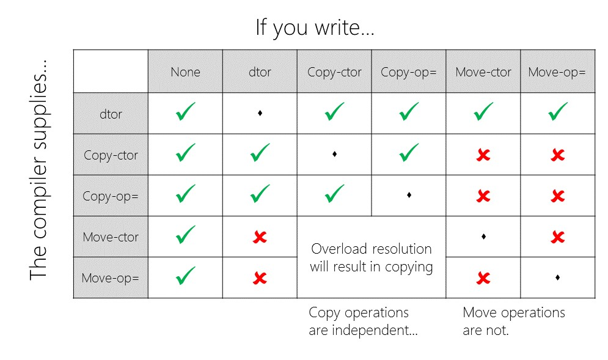

King Abdullah University of Science and Technology, Thuwal, Saudi Arabia.
Correspondence to: konstantin.burlachenko@kaust.edu.sa
Editors:
Revision Update: April 1, 2024
Historical Note: The original title "Technical Note. From C++1998 to C++2020" in the update from Mar 2024 has been changed, due to the addition of a special appendix to cover some language and library features of C++ 2023.
© 2022-2024 Konstantin Burlachenko, all rights reserved.
Table of Content
Miscellaneous Features of C++11
Miscellaneous Features of C++17
Miscellaneous Features of C++20
!= from ==.Table of contents generated with markdown-toc
On that technical note, we would like to share complete information regarding the C programming language and all primary C++ programming language standards: C++03/98, C++11, C++14, C++17, and C++20. If you do not know C++, this note is less likely for you because it contains subtle technical details for people who are at least familiar with it a bit. Here "know" has a weak sense. We have also tried to appeal in that note to people with a not-so-big background in C++.
Do not get us wrong. If you have never seen the C++ language to obtain knowledge, we recommend first dedicating some time to reading original books by Bjarne Stroustrup. It would be only more effective for you. In recent years, Bjarne Stroustrup has made a lot of effort by providing easy-to-read books such as "Principles and Practice Using C++" and "A Tour of C++ (Second Edition)". We highly recommend for whom this language is new to first read any of those books.
If you're unsure whether you should learn C++ or not, then maybe the example presented in section Why learn C++ if I know Python (Toy Example) of this document will bring some consideration to your mind. C++ is complex, but currently, it's one of the fastest (in terms of execution speed in CPU) high-level, general-purpose programming languages in the world. It can be observed from comparison tests such as benchmarksgame-team.pages.debian.net/benchmarksgame and checking the language in which compute demanding applications in your domain have been written. In our experience in most cases, it will be C or C++.
Sometimes you must write software for a software platform (Java Virtual Machine, JavaScript Engine, Python interpreter). This is the case for instance when you can not execute real code in a target computing machine for some reason. In such circumstances, the de facto standard can be another programming language: not C and not C++ at all or a dialect of C or C++. Analyzing when it is good or bad to limit users from using C++ or in fact any compiled language is out of the scope of that technical note.
However, it is important to note that there is a notion of a programming language (in a very strong sense) that converts algorithms into the language of a computing machine. If Language always requires a software platform to operate - it is not a programming language (See https://www.stroustrup.com/bs_faq.html#Java for a discussion about this).
This note is mainly based on materials from the references section and personal experience. We think that information can be helpful for three categories of people:
Finally, we welcome anybody who wants to make this note cleaner. We appreciate the style of language lawyer and practical applicability, but we don't want to have any of the extremes of both types.
To reproduce code snippets you need to have a C++ IDE or command line environment in which you will compile and link code snippets. Because currently there are plenty of versions of C++ programming language, you will need to provide compiler information about the version of the standard that you're going to use.
It can be accomplished in the following way:
/std:c++20 or /std:c++latest for
MSVC compiler.
Use MSVC 19.30 _MSC_VER) or higher. Visual Studio 2022 Community Edition is distributed with MSVC 19.32 (_MSC_VER) at the moment of writing this text. The MSVC version list can be obtained from wiki.-x c++ --std=c++20 if you're using Gnu Compiler Collection (GCC). Please use GCC 10.1 or newer. The GCC version list is available here.--std=c++20 if you're using CLang. Please use Clang 10.0.0 or newer. The Clang/LLVM version list is available here.Compiler vendors hard at work to catch up with all new features. You can keep track of which compiler supports which features of C++11/14/17/20/23 based on this table: https://en.cppreference.com/w/cpp/compiler_support
Alternative (standartized way) to check presenting of some feature (from C++2020) is using feature test macro. The list of avaialable macros are available here: https://en.cppreference.com/w/cpp/feature_test
C/C++. By C/C++, we mean C or C++ programming languages. In fact, these are two different languages. And we will use this only as a shorthand from time to time.
A Shallow Copy. A shallow copy contains copies of all members of an object one by one. If the copied members are pointers to dynamic memory, then only pointers by themselves are copied. Objects to which data pointers refer are not taken into consideration during shallow copying.
A Deep Copy. A deep copy copies all dynamic memory objects referred to by any pointer members and data fields/members of the object as well.
Upcast. Casting object to its base class.
Downcast. Casting object to the derived class.
Function Signature. The function name and the parameter list is called the signature of a function.
Function Prototype (function declaration). The language statement that describes a function sufficiently for the compiler to be able to compile calls to it.
Template Type Parameter. Type placeholder used in class or function template, typically denoted by T. Example:
xxxxxxxxxxtemplate <class T>class MyClass{};Template Type Argument. The type assigned to a template type parameter T during template class/function instantiation.
Function Object (functor). Object of a class that overloads the function call operator. Example:
xxxxxxxxxxclass Area {public: double operator()(double w, double h) const { return w * h; }};Pure Virtual Function. The purpose of the virtual function is to enable the derived class versions of the function to be called polymorphically. The purpose of a pure virtual function is to have polymorphic behavior in a case when the implementation of that function in the base class is literally absent. Example:
xxxxxxxxxxclass Shape {public: virtual double area() const = 0;};Abstract Class. A class that contains at least one pure virtual function.
LValue (expression). An LValue evaluates during compile time to some persistent value with an address in memory where you can store something. Informally that is something to the left of the operator equals. LValues is an attribute to describe expressions in the Language, not value even value is presented in the term.
RValue (expression). An RValue evaluates a result that is stored only transiently. An expression from which the address cannot be taken. Also, this is something that, at least in principle, can be encoded in the code of generated instructions for the processor. Rvalue is an attribute to describe expressions in the Language, not value.
In 99% of cases, these are unnamed temporary variables. But a good counterexample of something that is an RValue but has the name is this.
Unfortunately, starting from C++11, the object type and reference type do not match each other due to a more complicated picture with expressions(values) and references.
XValue (expression). Objects in memory that would be destroyed very soon. It's an object for which it is reasonable to use move semantics to take data via the T&& notation from C++11. The letter "x" in XValue stands for expiring value.
LValue Reference (for all C++ versions). Typically, an LValue reference is an alias for another variable. LValue object may be bound to the LValue reference through the following syntax which essentially creates one more name (alias) to a variable:
xxxxxxxxxxX&x = obj; // X is the datatype of objRValue Reference (only for C++98/03). In C++98/03, it is a usual const regular reference to a temporary object or expression that can be used from the right-hand side of the operator =.
RValue Reference (starting from C++11). The goal of an RValue reference is to have a moving candidate for functions like void f(T&&). In practice, RValue reference is either:
std::move to an RValue reference. The std::move after moving, brings object for moving is applied to a valid but undefined state:
Reusing an object after moving from is in fact legal and valid. In one of the talks in CppCon Nicolai M. Josuttis member of C++ Standard Committee, explicitly highlighted it. In that case, you should reinitialize the object using class API or the logic behind the class.
What was known in C++03/98 as RValue Reference starting from C++11 has been renamed into Const LValue Reference.
Token. In the terminology of Programming Languages, tokens are separate words of a program text. One easy case is when such words (tokens) are split between each other by spaces. A more hard case is to identify tokens when there are no whitespaces.
Pure Function. The pure function is a type of function (used in the case of using constexpr) in C++ when function implementation make C++ function coincident with mathematical function. Specifically, we can name the function as pure if the following holds:
If you have digital design background this type of logic is named as Combinational Logic (CL) which is stateless.
Incomplete Type. In C and in C++ there are two cases when you can use a type with a not yet defined size - creating a pointer for a type and creating an alias name via a typedef or using keywords. Essentially it is possible because the size is not required for a declaration of a pointer and alias name. [2, p.150]
xclass A;
typedef A B; // Typedef for C++98/03
using BB = A; // Type Alias (also known as smart typedefs) for C++11
A* ptr;Statement Block. Several C++ or C language statements organized into in a pair of curly braces {, }.
cv qualifiers. During reading standards or another form of language rules you will at some moment faced with this term. It means constant and volatile type qualifiers.
Both C and C++ programming language represents a pretty thin abstraction over the underlying hardware. The software level below C and C++ is Assembly Language for your computing device. Why computing is critical is excellently motivated by Prof. Charles E. Leiserson from MIT, in his undergraduate course about Algorithms and Data structures. In the first lecture. Prof. Charles E. Leiserson in 2005 ( MIT Introduction to Algorithms 2005, Lecture 1 ) highlighted that there are a lot of things that are more important than performance: Modularity; Correctness; Maintainability; Functionality; Robustness; User Friendliness; Programmer time; Simplicity; Extensibility; Reliability; Security; Scalability; etc.
The Performance is the goal in case of having real-time requirements for the software. If the software is not fast enough - it's just not a choice to use or buy it in such circumstances.
But in fact, if think deeply then performance in fact due to Prof. Charles E. Leiserson is the currency (money) under which it's possible to buy other features from the list above because these features are not coming for free.
Nowadays, in 2022 due to Tobex Index July 2022, the interpretable programming language Python is the most popular in that world. From the graphics, you can observe that Python is slightly beyond C in terms of popularity. Interestingly, Python has been designed originally only as a replacement for Bash. That has been described in that Blog Post written by author of Python Programming Language:
"...My original motivation for creating Python was the perceived need for a higher level language in the Amoeba project. I realized that the development of system administration utilities in C was taking too long. Moreover, doing these in the Bourne shell wouldn't work for a variety of reasons. The most important one was that as a distributed micro-kernel system with a radically new design, Amoeba's primitive operations were very different (and finer-grain) than the traditional primitive operations available in the Bourne shell. So there was a need for a language that would "bridge the gap between C and the shell..." - Guido van Rossum.
It is not a secret anymore that today people try to apply Python beyond launching scripts but creating other user space applications. When (a) Underlying Algorithms that you need are implemented in C++ or inside Hardware; (b) The algorithms are available via Python bindings with suitable interfaces; (c) The overhead of Python Interpreter is negligible; (d) There is a big part of the system has already been implemented in Python - It may be a choice to use Python in that case.
We think the main reason for the popularity of Python is primarily due to the fast learning curve measured by three days (only Language, no external libraries, frameworks, or middleware). At the same time, it's impossible to learn C++ in 3 days. We think the C++ community should think about it for its survival.
But any interpretable languages are not a choice when actual time matters or subtle control over the memory in DRAM or any memory/compute inside any device connected to the computer matters, even for programming only in user space.
The interpreter parses the program's text (source code) line by line (that is represented or in text form or extremely high-level instructions). It is highly inefficient from the start even to execute such high level code. As a consequence, Interpretable languages provide algorithms that can be even up to 50'000 times slower in computing than highly optimized C/C++/ASM code. The interpreter is the worst possible that can be for execution time from all possible three choices for converting source code into the software: (Interpreter, Just In Time compiler, and Compiler).
For a concrete example, please look at Lecture 1 from 6-172. Performance Engineering of Software Systems at MIT with Prof. Charles E. Leiserson. The overview of that course is also available here: About Performance Engineering course 6.172 at MIT.
Interpretable languages do not provide subtle interfaces to Operation Systems such as POSIX API, Windows API or other OS-dependent APIs. It provides bindings for API that the team that developed the interpreter had time to finish, and they are provided in a highly simplified form.
To some extent, interpreters provide portability in the source code for user space applications. Still, it comes with the cost of reducing the number of possible calls to OS. Creating portability at the source code level between different OS is a big thing, and people thought about that in the past. The problem understanding led to the creation of POSIX, which was a way to provide portability between different OS via the standardization of many everyday routines for OS API itself. If the goal is portability between different OS, more correctly is to solve it via standardization of API to OS. Creating extra software layers, especially in the form of interpreters, is a suboptimal decision if speed or memory matters.
During work with interpretable languages, you don't have a real interface to work with the devices' memory inside the computer and devices in general in all possible ways provided by OS. In fact, you do not even have enough tools to precisely handle just the usual virtual memory in your process.
The interpreter as a computer program adds an extra level of abstraction. The standard implementation Python interpreter is CPython (https://github.com/python/cpython). It is called CPython because it has been implemented in C. Such software as an interpreter improves the time for completing the project from a social point of view, but implementation is suboptimal.
The absence of a compiler has pros - you do not spend time on a compilation, but there are cons - now, the compiler will not tell you about errors in the code because there is no compiler.
Uncontrollable memory allocations in a program that should execute and live in OS for a long time and during runtime require extra memory allocation - which may lead to memory fragmentation and other memory problems. In Python, you don't have control over the memory in your application. And these uncontrollable memory allocations can happen in Python runtime or inside external C or C++ libraries under which Python depends.
Compiler optimization tricks such as code inlining are out of the scope of any interpretable language because for performing such optimization you should have a compiler. The elimination of the compiler stage will make such optimizations literally impossible.
During creating multithread implementation, you should be careful about memory fences (memory barriers used to enforce ordering constraints of executed instruction in a superscalar processor before and after memory fence), synchronization, data races, atomic operations, absence of storing some objects in registers. In reality, the implementation of interpreters is typically highly leveraged into existing C or C++ libraries because creating such modules of functionality in an interpreter by itself is not effective enough. However, it is not true that all C and C++ libraries are thread-safe. And so, creating a true multithreading environment inside an interpreter can be tricky. If you want to learn more about how Concurrency in Python is implemented (and want to know more about Global Interpreter Lock (GIL)) we recommend talks by one Python enthusiast, David Beazley: An Introduction to Python Concurrency, David Beazley. Do not get us wrong. Developers of the Python interpreter did their best, but the problem was not so easy in the first place.
Garbage Collector (GC) brings various limitations to any programming language. For example, GC disallows any pointer arithmetic. (For details, please look at Lecture 11 from 6-172. Performance Engineering of Software Systems at MIT).
Due to high abstraction, Interpretable Languages violate memory locality principles because almost every object is allocated on the heap. Memory Locality is an essential principle because on that principle all memory caches in all levels of various memory storage are working inside modern computing devices.
Processors have a limited number of registers in their front end (And correctly perform register allocation from processor backend is not so trivial). If you have too many objects with too many wrappers around them the useful load for a real final computer device is smaller and degrades. (The fun and relative term from Communication for this phenomenon is a goodput, which is throughput from which all service information has been removed).
There is no way to use special registers or special instructions of the processor from typical interpretable language (Bash, Python) directly.
The modern CPU devices (after 1980) and GPU compute devices are pretty complicated pipelined devices with different Functional Units (FU). Also, such devices have L1, L2, L3 Data, and Instruction Caches. To utilize these Caches the program should execute instructions in ISA for the CPU. Unfortunately, if you will execute the interpreter, it's very likely that caches will hold data and instructions of the Interpreter itself.
The interpretable language is excellent for prototyping. But any interpreter, any user space algorithm in it, can be beaten already by C++/ASM implementation both in used memory and compute time on the same hardware. At least be aware of that.
C++ is pretty complex if considering all language details. That aspect is not suitable for spreading the language in society fast.
The powerful expressivity of C++ is a technical power. At the same time, it's its weakness in obtaining new adepts. Without new adepts, any concept will die.
Due to the high entry level for C++ in Academia, high momentum belongs to Python, not to C++ at all. C++ is used only when necessary (E.g., you need to work with the hardware directly; you need to have algorithms/mathematical model that operates in real-time; you need to be careful in terms of consumed memory).
The speed of development of the prototype is faster in Python for typically user space applications.
C++, to some extent, forces you to be aware of the hardware level. It's not clear whether it is good or bad:
The next problem that people with Python backgrounds face is the need to install Toolchains and Build systems. Sometimes you even must learn the syntax of build systems. With scripting language, such a thing is absent in the first place. Once you have the interpreter installed you just launch the script.
People continue to predict that C++ will die. It's an ongoing (and fun) three-decade process, but it is not happening. It seems that the fundamental things of the language make it immortal, even though the language tends to be more complex.
The Language started as a project in Bell Labs in 1979 ([3]). The principles of C++ language, which B.Stroustrup put into the Language, were documented between 1981 and 1991. According to B.Stroustroup, they existed even before the decision of standardization that took place in 1989. More importantly, the principles of the Language, even in 2022, are still inside it, and they are the heart of the Language ([3]):
No implicit violation of static type system.
Provide good support for user-defined types similar to built-in types.
The locality of memory access patterns for variables and arrays is suitable for hardware in the long term.
Zero-Overhead principle:
Some language decisions due to B.Stroustoup:
Sometimes while making programs in Python, you need to write programs directly in Python, not only call external C++ libraries from it. Possible reasons why you need to implement the algorithm in Python (without leveraging external libraries):
Creating a CPU-effective algorithm in Python is difficult when wall clock time matters. As a concrete example, Let's compare the wall clock time of two programs written in C++11 and Python3 under the following assumptions:
The test compares wall clock time of the following:
The task is performing setup elements in the array with 10M elements as an arithmetic sequence, performing their summation, and converting the result to double (fp64). Our OS is Ubuntu 18.04.6, x86_64.
1. Native Python implementation
xxxxxxxxxx#!/usr/bin/env python3# Plain Python Codeimport time
start = time.time()a = [0] * 10*1000*1000s = 0.0
for i in range(10*1000*1000): a[i] = i s += float(a[i])end = time.time()
print(f"Processing {len(a)/1000000}M elements takes: ", (end - start) * 1000.0, " milliseconds")print(str.format("Sum is {0:g}" , s))Output for Python 3.6.9:
xxxxxxxxxxProcessing 10.0M elements takes: 2193.230390548706 msSum is 5e+132. Python implementation using numpy
xxxxxxxxxx#!/usr/bin/env python3# Python Code that leverages Numpy Library 1.22.4# pip install numpy
import timeimport numpy as np
start = time.time()
a = np.zeros(10*1000*1000, dtype=np.int32)for i in range(10*1000*1000): a[i] = is = a.sum(dtype=np.double)end = time.time()
print(f"Processing {len(a)/1000000}M elements takes: ", (end - start) * 1000.0, " milliseconds")print(str.format("Sum is {0:g}" , s))Output for Python 3.6.9:
xxxxxxxxxxProcessing 10.0M elements takes: 1051.522970199585 millisecondsSum is 5e+133. Cython implementation
xxxxxxxxxx#!/usr/bin/env python# filename: setup.py# Cython version 0.29.24# pip install Cython
from setuptools import setupfrom Cython.Build import cythonize
setup( name = 'Reduction Test', ext_modules = cythonize("*.pyx"), zip_safe = False,)xxxxxxxxxx#!/usr/bin/env python3# filename: test_cython.pyximport time
start = time.time()
cdef int icdef double scdef int[10*1000*1000] a
for i in range(10*1000*1000): a[i] = i s += float(a[i])end = time.time()
print(f"Processing {len(a)/1000000}M elements takes: ", (end - start) * 1000.0, " milliseconds")print(str.format("Sum is {0:g}" , s))Build and launch
xxxxxxxxxx$ python setup.py build_ext --inplace$ python -c "import test_cython"Output for Python 3.6.9:
xxxxxxxxxxProcessing 10M elements takes: 19.9463367 millisecondsSum is 5e+134. C++ implementation
xxxxxxxxxx
using std::cout;
namespace chrono = std::chrono;
static int a[10'000'000] = {};
int main() { auto const start = chrono::steady_clock::now();
double s = 0.0; for (size_t i = 0; i < std::size(a); ++i) { a[i] = i; s += double(a[i]); }
auto end = chrono::steady_clock::now();
cout << "Processing " << std::size(a)/1'000'000.0 << "M " << "elements takes " << chrono::duration_cast<chrono::milliseconds>(end - start).count() << " ms\n" << "Sum is: " << s << "\n";
return 0;}Building command line for g++ 7.5.0:
xxxxxxxxxx$ g++ -O3 -DNDEBUG -Wall --std=c++17 -s test2.cpp -o testcpp$ ./testcpp
Output:
xxxxxxxxxxProcessing 10M elements takes 16 msSum is: 5e+13Comment: In Python the float type is equivalent to double in C and C++. (See sys.float_info in Python3 Library documentation).
Results. From that benchmark, we see that the C++ implementation:
If you need to have a highly effective algorithm implementation in Python without using translation from Python to C++ (via such language as Cython), then it's not easy to be better even than usual C++ code, even in simple things.
Cython is a Python language with C data types. While using Cython, the source code is translated from Python into C or C++, and finally, the code is compiled as a Python extension module. As you see, compilable languages bring an extremely significant speedup. Almost any piece of Python code is also valid Cython code (See Cython limitations).
Cythons has two primary use cases:
- Extending the CPython interpreter with fast binary modules
- Interfacing Python code with external C libraries.
As we have observed, Cython provides a way to speed up simple single-file Python code. But usage of Cython brings you to a situation where you are not using an interpreter anymore. Nevertheless, it can be helpful to be aware of such a possibility to improve the speed of Python.
Both compiler writers and people who use the C++ language as writers should obey the international standard ISO/IEC for the language. C++ Standardization has a long history:
Scott Meyers gave a presentation about C in YANDEX back in 2014. His point of view was that C++03 can be considered a bug fix release of C++98, and C++14 completes C++11.
Fundamental code guarantees of C++ :
All containers in C++98 provide a basic guarantee. Some operations (for example, std::vector<T>::push_back) give a strong guarantee.
The compiler converts text in a high-level language into instructions for a specific Instruction Set Architecture (ISA) of the Computing Device or another machine-dependent representation. It saves the results of processing each source file into a correspondent compiled object file.
Compiled object files augmented with another binary file from static libraries are linked into the final executable. The language does not specify the internal details of the compilation or linkage - it's the responsibility of the creators of toolchains.
The final binary format such as ELF for Linux and PE for Windows is also not under the obligation of creators of Language or user space developers. It's under the responsibility of the creators of the Operation System.
There are situations when the target device in which the program will be executed has no Operating System at all. The case of launching the program on a target device with no Operation System sometimes is denoted as "Launching on Bare Metal". In that later case, the format of binary files is typically under the Device Vendor's responsibility (example: PTX, SASS for NVIDIA GPU is provided by NVIDIA).
A high-level overview is presented above, but if you are curious about how a compiler compiles source then welcome to this section. It's possible to be productive even without the knowledge below, especially during creating only user space applications. If you want to know how things are working and you have that curiosity - you're welcome to read the text below. In another case - just skip it.
A source code for C and for C++ consists of source files.
Each source file is translated (or processed) through the following sequence of steps.
xxxxxxxxxx
int main() { std::cout << "Do you know C++? Are you sure ??)"; return 0; }## is a concatenation operator for words in a source code. It is the valid operator for the C preprocessor, but it is an invalid token for the operator in a proper C or C++ program.The output of preprocessing of the source file is named as preprocessed source and typically has the extension *.i. For example, obtaining such a source file from clang can be achieved via clang -E. After the initial textual phase and C preprocessor phase, the next phase for compilation is Lexical Analysis.
The essence of Lexical analysis of the program is in splitting the program source code text into tokens. Separate words or atoms of a program source code text are some words of the source text that cannot be divided further.
An important aspect of C and C++ is that the C and C++ compiler always tries to assemble the longest valid token (in terms of the number of single characters) by processing the text from left to right character by character, even if the result is an unbuildable program. Example from [2, p.20]:
xxxxxxxxxxint a = 1, b = 1, c = 3;c = b--a; // Compile error// ..// Invalid tokenization: tokens (b, --, a)// Valid tokenization: tokens(b, -, -, a)// ...// But C and C++ compiler does not do that c = b - -a;The concept of whitespace in C and in C++ includes different keyboard spaces and comments. In C and in C++ and most programming languages, the tokens fundamentally can be one of the following types:
After finishing, the Lexical analysis, the program consists of a sequence of tokens.
The compiler is based on the language rules typically described by Backus–Naur forms for Context-Free-Grammars (CFG). The Grammars by themselves are studied in a math area called Formal Languages and Grammars Theory. That area of mathematics is essential for some Compiler's Fundamental aspects.
Based on the grammar of the C or C++ programming language, the syntax analyzer constructs the Abstract Syntax Tree (AST) for the program's source text. The exact Grammar rules can be found in the Appendices of corresponding Language Standards.
Unfortunately some rules of the language can not be expressed only by using CFG. Examples: multiple declarations of a variable in one scope, usage of not yet declared variables, access to a plain C array via an index that is out of range, etc.
For handling such analysis, the semantic analyzer inside the compiler is used.
At this moment, we constructed AST for a program and augmented it with information from the semantic analysis stage. Also, we can traverse AST and translate this code into a more low-level construction expressed as Assembly Language or Intermediate Representation (IR).
Compilers' innovations based on various fields of science and engineering that mainly bring considerable speedup are exploited in this stage. Typically, compilers perform a sequence of transformation passes. Each transformation pass analyzes and edits the code to optimize performance. A transformation pass might run multiple times. Steps run in a predetermined order that usually seems to work well. Some examples of optimization techniques that are happening at this moment and considered as a general practice:
Various things of optimization are out of the scope of the compiler. And can only be solved by the creator of the Algorithm/Method. Even we think there is a possibility of research to provide that information for the compiler.
In the end, at least conceptually, the compiler emits final instructions for the target Assembler. How exactly to emit code is under the decision of the compiler and toolchain creators.
However, in reality, it's possible to have three different scenarios of what exactly compilers emit:
The compiler emits the final binary code for the target Instruction Set Architecture (ISA). (Example: Microsoft Visual C compiler does that.)
Compiler emits the program text written in Assembly. But in fact, the process of producing the final binary code is under the responsibility of the Assembler program. You can obtain such assembly source from preprocessed file manually for clang toolchain via invocation of clang <source_file.i> -S -o -.
With the coming LLVM project there is in fact intermediate layer between High-Level Language (such as C++) and ASM for the target device (described by ISA). This layer is called Intermediate Representation (IR). And contains three stages of conversion:
*.ll. You can obtain unoptimized LLVM-IR code in clang toolchain via invocation of clang <source_file.i> -S emit-llvm -o -.*.ll source code.For further study as an introduction to LLVM-IR, we recommend Lecture 5 from MIT course 6.172 Performance Engineering of Software Systems.
Assembler(ASM) Language is the lowest possible level that can still be readable, but understanding it (without extra tools and extra documentation) is not easy in a big program. ASM language has a close relation to target computing devices.
One instruction in C++ code can correspond to several( 1,2,3, etc.) ASM code instructions. On the other hand, the same instruction in C and C++ can be emitted (materialized or generated) into different instructions in ASM Language.
An Assembler is a program that finally converts ASM instructions obtained from a compiler into binary native code for the target device. The machine instruction emitted by ASM is described by the target Instruction Set Architecture (ISA). In Assembly literature, the process of converting ASM instructions into machine code is named as encoding. An inverse process of reconstructing ASM code from binary code is called decoding or disassembly.
For GCC toolchain the standard de-facto Assembler is GAS. The output of Assembler is saved into object files.
The Assembly output code by itself obeys Instruction Set Architecture ISA. The ISA specifies instructions, register, memory architecture, data types, and control flow mechanisms. The ISA connects physical Hardware designed by Electrical Engineering (EE) with the software constructed by Computer Science (CS).
The particular implementation of ISA is called Microarchitecture in Electrical Engineering(EE) terminology. Different vendors can provide the support of the same ISA, but Microarchitecture is typically under NDA.
Microarchitecture is the lowest level of computation and it's under the responsibility of Electrical Engineers, not Computer Science people, and it's in fact it is mostly under NDA.
There are online tools such as [11] Compiler Explorer that provide a demonstration of the generated Assembly code while using various compilers and target platforms for C++ online. It can be very useful for educational and analytical purposes because using color shows the correspondence between C++ code and Assembly code.
The linker constructs the final program or dynamic (shared) library from compiled source files in the form of object files, obtains additional input archives of object files (called static libraries), obtains information about used dynamic library dependencies, performs other semantic checks (for example via finding undefined references for C and C++ entities), using specially provided flags, perform a whole-program/global program optimization or optimization specified via command links.
The nuances of compiler/linker organization are out of the scope of C++ language and can vary from vendor to vendor. For example, for GCC, the Assembler is a separate program from the C compiler physically. In another toolchain, e.g., from Microsoft Visual C compiler, the translation to the final binary code is inside their C compiler.
The name of the linkage program typically in toolchains has a name such as ld or link.
Address individual bits. Few machines can directly address an individual bit. Even if the device allows it, it is out of the scope of C and C++, to be honest. Of course, you can operate on bits, but not directly.
For whom it may be interesting - in fact conceptual accessing individual electrical wires (or bits) is available via Hardware Description Languages (HDL) which are used to describe electrical circuits to build electrical computing and storage components. However, this level is far below Assembly (ASM) and out of the scope of this technical note.
Define your operators syntactically with their syntax. B.Stroustroup, in his Technique FAQ ([8]), said that the possibility had been considered several times, but each time they decided that the likely problems outweighed the potential benefits.
If you have arrived from another programming language and are only a bit familiar with C++, we would like to first enumerate several, not complicated things for you.
&& and logical "or" || are called short-circuit evaluation due to their behavior of evaluating subexpression in the chain of logical operations only when needed for the logic expression evaluation. However, the bitwise operators & and | do not short-circuit.else always belongs to the nearest preceding if. The potential confusion here is known as the dangling else problem.new must be paired with a single delete. Every new[] must be paired with a single
delete[]. Any other sequence of events leads to either undefined behavior or memory leaks.this, which includes the address of the object for which the function was called.const member functions for const objects. You should therefore specify all member functions that do not change the object for which they are called const.const, because a static member function is not associated with any class object, it has no this pointer, and const property is not applied to them.
return_type (*function_pointer_name)(parameter_types);[4, p.733].
There are names reserved for the compiler implementations. It's all names that:
___ followed by an uppercase letter _[A-Z], e.g., _Foo.That name should not be used by non-compiler and non-STL writers both for C and C++ languages. With that rule for a long time, people escape conflicts between the naming of compiler-specific entities and entities of the construct program.
Sometimes compiler writers violate this principle. For example, The Linux Programmer's Guide mentions standard predefined macro uses
unixandlinuxduring compilation for the Linux platform. These special names are not the names that follow C and C++ conventions to distinguish names used in the program and for compiler writers.
Sometimes, it's possible to observe defined guards at the beginning of the buildable program's header files via
#ifndef/#definethat uses names starting with__.These special names are not the names that followed the mentioned rule and are incorrect usage of identifiers.
In C and C++, postfix operators have higher priority than unary operators.
xxxxxxxxxx*p++; // *(p++)In C and C++ unary operators have higher priority than binary operators.
Operators ==, != have higher priority than logical connectives.
The C++ standard guarantees that the life of a temporary object if it is LValue (temporary object that occupies memory) is extended to the life of any reference that refers to it, including the constant. In simple cases, based on this trick, you can capture returned temporary objects from a function by constant reference to reduce the number of copy constructors.
References to RValue objects whose address cannot be obtained do not extend the lifetime of temporary objects. However, the compiler can only detect simple constructions with RValue objects. For example, if you create a temporary object and call a method from this temporary object, that will return a reference to itself. The compiler will no longer be able to determine that this reference is not valid after removing the temporary object.
The call for containers in standard C++ with name empty() does not empty container. It returns the answer to the question "Is the container empty?".
C++ 1998 and C++2003 use the C89 preprocessor, although the C language also has evolved: Tradition C, C89, C95, C99, C11, and C17. For a detailed description of the C preprocessor, please read Chapter 3 in ([2]).
Preprocessor macro extensions in C and in C++ have the following important properties. Once an extension replaces a macro call, the macro call search process starts from the beginning of the expanded extension for further replacement.
During this process, macros referenced in their own expansion are not re-expanded, and that preprocessor macro extension does not lead to infinite recursion. Example:
xxxxxxxxxxFor the C and C++ preprocessor, any undefined identifiers that appear in expressions after the conditional directives #if and #elif is replaced with the number 0.
The original C specification says that the actual directory in which the compiled source file is located is used to look for a user-defined include file.
But nowadays an enumeration order of include paths varies between compiler toolchains, so you may figure it out for a particular toolchain by experiment or from its documentation.
For each "C" standard library <X.h> header file, there is a corresponding C++ standard header file <cX> in C++. A standard header file whose name begins with the letter c is equivalent to a standard header file in the C library. (B. Stroustrup, Spec. Edition, p. 487, 16.1.2). Those header files expose different behaviors in terms of using their names from the global namespace:
<X.h> define function names in the std namespace and also import those names into the global namespace. So <X.h> means mostly like "a C style" including compatibility.<cX> define function names only in the std namespace. ([1], 9.2.2, page 247).| Macros | Meaning |
|---|---|
__func__ | In C99, a predefined identifier with the name of the current function. C++11 officially supports that too. |
__LINE__, __FILE__ | Current line number, and current source file name. |
__DATE__, __TIME__ | Date and time of source file compilation. |
__STDC__ | Compiler conforms to the C standard. |
__VA_ARGS__ | Only C++11 and C99 formally support that, but informally __VA_ARGS__ is often supported. This built-in name can be used for macros with an arbitrary number of the argument. When the macro is invoked, all the tokens in its argument list ..., including any commas, become the variable argument. |
__cplusplus | Version of C++ standard that is being used. For MSVC you should provide a compiler option |
/Zc:__cplusplus. | |
__STDC_VERERSION__ | Version of standard C. |
Example with using __VA_ARGS__:
xxxxxxxxxxExample of checking the version of C or C++ compiler mostly based on [2, p.53]:
xxxxxxxxxx
int main() { printf("C++ version %li\n", __cplusplus);
printf("C99 standard\n");
printf("C89 with additions 1\n");
printf("C89\n");
printf("C not standartizied\n");
return 0;}In C and C++ and potentially in other programming languages, the same identifier can be associated with more than one object at a given moment. This situation is called name overloading or name hiding ([6], chapter 13).
Next, creating two declarations of the same name in the same overload class in the same visibility block or at the top level is an error.
| # | Overloading class name | Identifiers included in the class |
|---|---|---|
| 1 | Preprocessor Macro Names | The names used by the preprocessor are independent of any other identifiers. |
| 2 | Operator labels/tags | The labels used immediately follow the goto statement. |
| 3 | Structures, Union, and Enum tags | They are part of a structure, union, or enumeration and immediately follow the keywords: struct, union, and enum. |
| 4 | Components namespace | Defined in the namespace(or name scope) associated with the corresponding structure or union type. |
| 5 | Another namespace | Name of the following objects: Variables, Functions, Typedef names, Enumeration constants. |
C++ introduces structure and union tags, and enumeration names are implicitly declared via typedef in the namespace "Another" where there are also usual variables.
If you explicitly use a typedef for a structure followed by a variable declaration, it will lead to an error.
However, tag names can be hidden by subsequent variable or function declarations or by an enumeration member of the same name in the same scope.
Interestingly, according to ([6], Section 3.3.7), functions/variables take precedence over type tags in any order.
In C++, in a literal expression, you can encode the type of literal:
| # | Type | Suffix | Alternative suffix |
|---|---|---|---|
| 1 | long | l | L |
| 2 | long long | ll | LL |
| 3 | unsigned | u | U |
| 4 | unsigned long | ull | ULL |
| 5 | float | f | F |
| 6 | double | no suffix | |
| 7 | long double | l | L |
| 8 | std::string | s |
Suffix s has been made available only since C++14. Other suffixes (1-7) have been available since C89.
Starting from C++11, you can use the following prefixes for strings:
| # | Suffix | Description |
|---|---|---|
| 1 | L'a' | wchar_t symbol. For Windows it's UTF-16, for Linux it's UTF-32. |
| 2 | u'a' | UCS2 symbol. Pretty like UTF-16, but surrogate pairs are not supported in UCS2. |
| 3 | u"a" | UTF-16 string. With support for surrogate pairs. |
| 4 | U'a' | UCS4 (UTF-32) symbol. |
| 5 | U"a" | UCS4 (UTF-32) string |
| 6 | u8"UTF8_string" | UTF-8 string |
| 7 | R"(asd\n)" | Raw string. Analogue of Python's r"""str str""". Multiline is supported for such lines and special character sequences \n are not special. |
| 8 | R"*(asd\n)*" | Raw string literal with custom delimiters. |
The UTF-8 and UTF-16 are variable-width encodings for characters. Not all letters in Unicode can be represented by a single 8-bit character for UTF-8 or a single 16-bit character for UTF-16.
There are only two kinds of function and function calls in C++:
In functions with void return types or when the return type is absent (e.g., in constructors/destructors), you can have the absence of a return statement in a function body. It is equivalent to an explicit return; at the end of the function body.
Due to ([6], 6.6.3) "Flowing off the end of a function is equivalent to a return with no value; this results in undefined behavior in a value-returning function."
In C++, the main function cannot be called recursively.
Starting from C++11, there is a suffix syntax for the function return type. It is not primarily about templates and type deduction - it is about scope. One more example of when it was useful C++11 Far from B.Stroustroup ([9]).
xxxxxxxxxxtemplate<class T, class U>auto mul(T x, U y) -> decltype(x*y) { return x*y;}The notation of auto means "return type to be deduced or specified later".
A non-constant reference cannot refer to a temporary variable.
Although temporary objects can only be passed as const T& or T. However, calling non-const methods on temporary objects is allowed. The initializer for const T& does not need to be an LValue and even be of type T. In such cases, a temporary variable is created to hold the initializer, lasting until the end of the scope of the reference.
Linkage rules cover name mangling and the call convention. Due to ([6], 7.5.3), there is the following requirement for the linkage aspect of functions:
Every implementation shall provide for linkage to functions written in the C programming language, "C," and linkage to C++ functions, "C++". Example:
xxxxxxxxxxextern "C++" void f(); // To link functions in C++ style:extern "C" void f(); // To link functions in C style:That means that the following statement is legal starting from C++17:
xxxxxxxxxxint k = 0;k = k++ + 5; // Valid from C++17You can read about that in detail in ([1], 9.2.3 p. 248). But essentially it can be more than one definition of the following things in different translation units (cpp source files):
The same definitions are acceptable when:
Details about exceptions to the One Definition Rule are described in ([6], C++2003, p.23, §3.2/5).
In C and C++98/03/11/17, there are three allowable implementations for signed integers consisting of
Two's complement (or twos-complement-notation). The range is:
Positive numbers are represented in the usual way. The most significant bit of the sign is set to 0. Negative numbers are obtained via reversing(flipping) all bits of positive number representation plus 1. In Assembly for x86 that can be achieved via using NEG operation.
1000 ... 0000 0000 (bin) is the maximum negative number that has no positive equivalent.
One's complement (or ones-complement-notation). The range is:
Negative numbers are the complement of all bits of the corresponding positive number. In this representation, positive and negative zero are possible. As implication that representation has one number less than Two's complement.
Signed integer representation (or sign-magnitude-notation). The range is:
The representation of the modulus of negative and positive numbers is identical bit to bit. But the sign of the number is stored in the most significant bit.
It turns out that the most popular representation for signed integers by hardware vendors is two's complement notation.
Starting from
C++20, there is only one signed integer representation and its twos-complement-notation.
A particular dedicated type for enumerating integer constants from C89/99/11 and C++98/03/11 is called enum. There are some subtleties with it:
enum type is a synonym for integer with type int.In reality, that underlying type for C++ for implementing enum has some underlying integer type to store values, but it has not been specified by the language.
Starting from C++11 now we have two types of enum:
Strongly typed enums(or scoped enumerations).
Example:
xxxxxxxxxxenum class Color : int{red,green,blue};Strongly typed enum:
int.enum is int. Usual enums (or unscoped enumerations).
Example:
xxxxxxxxxxenum Color : int{red,green,blue};For ordinary enum:
enum starting from C++ 11, it's possible to specify explicitly the underlying typeenum as a namespace to refer to its elementsenum mechanism for accessing enum elements through enclosed namespaces is still in the language, even though sometimes it is not what you want.enum.Example with the forward declaration:
xxxxxxxxxx//enum A; // Compile Time Error: Forward declaration for unscoped enums are not allowed
enum A { a = 1, // [X] b= 2};
enum B:std::uint64_t;
enum B:std::uint64_t { c = 1, d= 2, // a = 3 // Compile Time Error Due to [X]};Documentation: cpp reference enum
unsigned or signed in the absence of an explicit type specification is not defined for char type.unsigned or signed in the absence of an explicit type specification is not defined for bit fields.Since C++20 right-shift on signed integral types is an arithmetic right shift, which performs sign-extension.
The auto in C++98/03 was an explicit memory type for local objects (link), but starting from C++11 the keyword obtained another meaning - it's a type automatically deduced similar to template arguments.
Also, auto never deduces to a reference type, always to a value type. This implies that the value still gets copied even when you assign a reference to auto. To make the compiler deduce a reference type, you can use auto& or const auto& [4, p.309].
The auto works in usual functions for variables and for arrays. For auto, the deduction is identical to the output for template function arguments.
xxxxxxxxxxauto v1(expr); // Direct initializationauto v2=expr; // Copy initialization
int arr[] = {1,2,3};for (auto x:arr) { printf("%i\n", x);}You need to be careful when using braced initializers with the auto keyword because it will deduce to std::initializer_list:
xxxxxxxxxxauto x1 = {1,2,3,4}; // x1 is an initializer_list<int>
// Bracket/Braced/Uniform initialization via using {}// In the form of list initialization does not allow narrowingThe auto can be used jointly with constant volatile type qualifiers (cv) and with reference and pointers. Example:
xxxxxxxxxxint ii= 1;const auto* p_ii = ⅈconst auto& p_ref = ii;const volatile auto* p_iii = ⅈThe volatile is a type qualifier that denotes that that type can alter its value not due to C++ language, but for other system reasons. Thus C++ implementation should be careful with optimization access for that variable through registers.
In C++ the usage of
volatiledoes not imply amemory fence, so be very careful with creating multithreaded code and you should use memory fences appropriately when you need to reconstruct sequence memory consistency guarantees in multithreaded applications. The memory fence (or memory barrier) means that memory operations started to be issued before the barrier are guaranteed to be performed before operations after the barrier.
The close-by conception for auto is decltype. It provides the ability to derive the type of expression without evaluating it.
There are some subtleties with
decltype. Thedecltype(x)anddecltype((x))are often different types. If the argument fordecltypeis an unparenthesized expressiondecltype(x)unparenthesized class member access expression, then decltype yields the type of the entity named by this expression. The inner parenthesesdecltype((x))cause the statement to be evaluated as an expression itself.
Example:
xxxxxxxxxxint main(){ double z = 1.0; struct Point { double x; double y; }; const Point a = {10.0, 11.0};
decltype(a.x) x4; // type is double; decltype(expression) is the type of the expression decltype((a.x)) x5=z; // type is const double& x4 = 123.0; // x5 = 567.0; // compile-time error int x; const int *ptr = &x; decltype(x) x1 = 1; // x1: int decltype(ptr) p1 = 0; // p1: const int* //decltype((ptr)) p2 = 0; // p2: const int*& compile-time error decltype((ptr)) p3 = ptr; // p3: const int*&
return 0;}Extra parentheses are used to preserve the const property for the type of expression.
Documentation: cpp reference decltype
Starting from C++11 there is a new syntax for for loop named "range based for loop". Example:
xxxxxxxxxxfor (auto i : v) std::cout << i;Range-Based Loops are valid for any type supporting the notion of a range. To support range-based for loops one of the following should be valid:
obj.begin() and obj.end() are valid C++ expressionsbegin(obj) and end(obj) are valid C++ expressionsMany times, in the past, people stated that C++ and C are different. Let's take a look at what it means concretely. All differences are pretty subtle, but there are plenty of them. The text below covers the difference between C99 and classical C++03.
Old C-style function declarations are not allowed in C++
xxxxxxxxxx/* Obsolete function definition for C++ */double alt_style( a , real ) double *real; int a;{ return (*real + a);}C programs should not use names that are keywords in C++ if one wants to be compatible with portability to C++.
C++ style comments // only appeared in C99.
C++03 has new operations ".*", "->*", "::" which are not available in C.
Different memory for char literal in C and in C++
xxxxxxxxxxsizeof('a') == sizeof(char) // C++sizoef('a') == sizeof(int) // CC++ 1998 uses the C89 preprocessor, although the C language has changed: Tradition C, C89, C95, C99, C11, C17.
Struct tags in C++ are included in the "other names" namespace. In this space are:
variables
functions
typedef names
enum constants
Therefore, struct n{}; typedef double n; is correct in C but not in C++. However, there is one exception described next.
Although for C++ type tag names (struct, union, enum) are implicitly declared using typedef, they can still be hidden by variables in the same scope S S;.
C99 has pointer qualifier restrict, which is not in the official specification of C++98/03/ and is supported by C++ compilers typically as __restrict or __restrict__ extension universally.
Support of flexible array type array. In C99 such a concept is defined in (ISO/IEEC 9899 C99, 6.7.2.1). Essentially it's the situation when the last element of a structure has an incomplete array type.
xxxxxxxxxxstruct s { int n; double d[]; };In the case of evaluating the size of structure s - the size of the structure's element d is omitted. However, it's possible to access elements of array d through the pointer or reference to structure s. In that case, you should understand what you're doing - the structure has a memory layout that maps it into the underlying buffer correctly.
In C99 (but not in C++), there is support for variable-length array (defined in ISO/IEEC 9899 C99, 6.7.2.1) that arrays with a size specified via a non-const variable. Such a concept allows a portable way to perform varying allocations of automatic variables in the stack.
Different initialization of the char array. In C++, the array must be of sufficient size to hold the "\0" character
xxxxxxxxxx// OK in C, OK in C++char a[3]="12"; char aEquiv[]="12";
// OK in C, Not OK in C++char a[3]="123"; C99 has named initializers for structures and positional initializers for arrays. C++03 does not have them. In C++20 the named initializers from C99 came with the name designated initializers.
The definitions of struct and union in C++ have block scope.
Type of memory.
The const variable declarations are static by default in C++, but extern in C.
The non-const variables declared on the namespace level have extern linkage by default in C++. (Appendix C. C++2003) 7.11.6, C++2003:
"A name declared in a namespace scope without a storage-class-specifier has external linkage unless it has internal linkage because of a previous declaration and provided it is not declared const. Objects declared const and not explicitly declared extern have internal linkage."
C++ declaration void f() is equivalent to void f(void) in C. The declaration in C void f() states that function has an indefinite number of arguments.
If the array is multidimensional, then in all cases, only the leftmost index can be omitted to determine the array's size. In this case the array size will be dervied from initializers size. Also, in C99, component-wise initialization is allowed, which as know as designated initializers in C++20. What is know as position intialization in C99 is not supported in C++:
xxxxxxxxxxint a[4] = {[1]=2};In C, but not in C++, you can write, although this is strange: sizeof(struct S{int a;});
Implicit cast from integer type to enum is allowed in C but not in C++. ([6], p. 113. 7.2.5):
"The type of an enum is an integer type that must support all underlying values. In C, enum has a synonym for int."
In C++, converting a void pointer to any reference type requires an explicit cast operation. In C, this is done implicitly.
Unconditional branching through goto is allowed in the middle of a nested block in C (while initialization of automatic variables is not guaranteed). This is not allowed in C++ in general.
But there is an exception. The exception is for POD types - you may skip their initialization. However, there are no guarantees for the initialization of vairable with POD Type.
In C++, there are more stringent requirements for inline functions - an inline function must be declared similar in all source files. In C99 this is not the case.
In C++, an inline function, in terms of code, can have an address and static variables inside. In C, it is not allowed.
In C99 and in C++, the compiler must see the function definition, i.e., the function should be defined so that it is inline in *.h. The compiler can choose to actually what to do:
C++ allows declaration in conditions, and it's not allowed in C.
There is no such type as a reference in C. (References are described in "С++2003, 8.3.2. References").
There are no overloaded functions in C.
C++ has default parameters, and they are not allowed in C.
In C++, there is a namespace mechanism with namespace, which does not exist in C.
In C, you can use exit() and abort() with no problems, but in C++, the destructors of local objects will not be called in this case.
Overloading of operators and functions is allowed only in C++.
C does not support general-purpose programming with templates.
C99 has a predefined identifier __func__. This identifier is implicitly defined by the compiler at the beginning of the function body as static const char __func__[] = "function-name". Such an identifier was absent in C++98/03.
In C++, operators not presented in C language usually have the highest precedence priority, except for throw which is only above the comma operator ,.
In C, there must be at least one element in the initialization list when a structure or array is initialized. For C++ if an empty initialization parathesis for a built-in array is used the array will be zero initialized zero initialized.
Before C99 (i.e. in C89, and in C89 with the extensions), there was a restriction on where automatic (stack) variables can be defined - only at the beginning of a local block. In C++98, you can declare local variables anywhere in the local scope.
xxxxxxxxxxint* const const_pointer;const int* pointer_to_const;Quite a lot of important information is contained in ([6], 5.3.3 sizeof) including the following:
sizeof(char) with all variations of char is always one byte.sizeof(bool) is implementation-defined.sizeof(wchar_t) is implementation-defined.Also, sizeof of structures in C and in C++ is equal to the amount of memory to store all components, space for padding between components, and space for padding after structures.
The sizeof operator applied for an array of structures and to other types, the following rule must be fulfilled: The size of an array of N elements in bytes is equal to N times the size of the array element.
In C and in C++, a function pointer expression can be used to call a function without explicitly dereferencing the pointer, i.e., you can call the function by using the function pointer f via (*f)() or via f().
The representation of an object in memory is a sequence of bits. The representation does not have to include all the bits, but the size of an object is the number of memory units of memory it occupies.
The amount occupied by one char character is taken as a memory unit. The number of bits in character is specified in the CHAR_BIT macro in C Language. All objects of the same type by C and C++ rules occupy the same amount of memory. In practice, however, one char is "always" one byte, i.e., the 8 bit number.
Computers are classified into two categories in the order of bytes in a word:
Some systems support two modes at the same time.
In some computers, data can be located in memory at any address; in others, alignment conditions are imposed on certain types.
A typical data type to store the address to some object/data is a pointer. To store (or serialize the value of pointer) in some integer variable, you can use uintptr_t. The uintptr_t integer type was introduced in C99. The uintptr_t is sufficient to store a pointer to any data, but formally not to a function.
A special value in C and C++ called a null pointer equal to a null pointer constant. A null pointer can be converted to any other type of pointer.
A null pointer in C and in C++ is:
The expressions below will not result in a compilation error, as much as we would like to:
xxxxxxxxxx void y(int*){} y(0);xxxxxxxxxxIn C++11, in addition to NULL, you can use `nullptr`. That keyword stands for null pointer variable with type `std::nullptr_t.` The `nullptr` is convertible to **any pointer** type and to `bool`.
xxxxxxxxxx const int *x = nullptr;When using union for a mixture of structures that start the same way, there is a guarantee in C (and C++) of an identical physical mapping of components "from this beginning".
In C and C++ there are the following guarantees for components of the variable with structure type (struct):
Structs are not allowed to perform comparisons with == or with >. The fundamental nature of this restriction in C (and in C++) is that, for objects, there may be holes in their memory layout that are filled randomly.
In C++, for the definition (not just declaration) of a variable in global scope, you can use extern int a = 0;. But in fact, extern is ignored, because according to (7.11.6, C++2003):
"A name declared in a namespace scope without a storage-class-specifier has external linkage unless it has internal linkage because of a previous declaration and provided it is not declared const. Objects declared const and not explicitly declared extern have internal linkage."
A compile-time string literal in C (and in C++) is statically allocated so that it is safe from a language point of view to return a pointer to a string literal from a function.
In C++, before the introduction of the exception mechanism, the new operator returned 0 when the memory allocation failed.
In the C++ standard, new by default throws a std::bad_alloc exception. As a rule, striving for similarity to the standard is best. Better to modify the program to catch bad_alloc rather than check the return for 0. In both cases, doing anything other than throwing an error message is not easy on most systems. See paragraph 5.3.4. Subparagraph 13: http://www.ishiboo.com/~nirva/c++/C++STANDARD-ISOIEC14882-1998.pdf
Essentially there are several variations for exotic usage of the new operator:
Usual placement new. Creation of an object, but using the already prepared address space. If the implementation needs to store some meta-information, then it can be the case that b != address. Example:
xxxxxxxxxx int *b = new(address) int(init_value);Overloaded operator new as a new global function in the global namespace. Example:
xxxxxxxxxx void* operator new(size_t sz) {return a.allocate(sz);} void operator delete(void* ptr)Overloading new with custom parameters. The first argument to the operator is the size in bytes and calculated automatically via sizeof by the C++ compiler. Then there is a list of arguments that you decide that clients should pass. Example:
xxxxxxxxxx void* operator new(size_t sz, Arena& a, float b) { return a.allocate(sz);} new(arg2, arg3) SOMETYPE()Operator overloading in a class. You can define new/delete within a class.
It's good practice to make new/delete
static. However, the operator will be implicitly static even if static is not explicitly specified.
When you need to call the destructor explicitly, and when you understand what you're doing, you can actually call in the C++ destructor via using pseudo-destructor. Moreover, the pseudo-destructor can be virtual. Of course, you need to do that in very rare cases.
xxxxxxxxxxclass A {public: A() {printf("A()" "\n");} virtual ~A() {printf("~A()" "\n");}};
class B : public A {public: B() {printf("B()" "\n");} ~B() {printf("~B()" "\n");}};int main() { A* a= new B; a->~A();}Formal definition from the C++ standard (C++03 8.5.1 §1): An aggregate is an array or a class (clause 9) with no user-declared constructors (12.1), no private or protected non-static data members (clause 11), no base classes (clause 10), and no virtual functions (10.3).
Aggregate types are unique in that objects of such types can be initialized in C++98/03 using the curly brace syntax, just as structures are initialized.
An aggregate class is called a POD if it has no user-defined copy assignment operator and destructor and none of its non-static members is a non-POD class, array of non-POD, or a reference. So finally POD type should contain:
And additionally:
If you want to write a more or less portable dynamic library that can be used from C and even .NET you should try to make all your exported functions take and return only parameters of POD-types.
The lifetime of objects of non-POD class type begins when the constructor has finished and ends when the destructor has finished. For POD classes, the lifetime begins when storage for the object is occupied and finishes when that storage is released or reused.
For objects of POD types, it is guaranteed by the standard that when you memcpy the contents of your object into an array of char or unsigned char and then memcpy the contents back into your object, the object will hold its original value.
As you may know, it is illegal (the compiler should issue an error) to make a jump via goto from a point where some variable was not yet in scope to a point where it is already in scope. This restriction applies only if the variable is of non-POD type. It is guaranteed that there will be no padding at the beginning of a POD object.
C++11 introduces relaxed POD type definition - standard layout types. To have a standard layout, the following rules should be satisfied for your type:
However in conrast with POD it can contain:
If you want to operate with classes that allow work in low-level byte representation the class characteristic in which you should be interested is trivially_copyable.
Before going into technical details about type conversion, let me be honest - it's hard to remember them, so possibly it is better to observe the big picture first:
xxxxxxxxxxThe general requirement when converting integer types is the mathematical equivalence of the source and target values.
And now let's go into technical details.
struct, or to the union is not allowed.enum as distinct from each other and from integer types as well.enum is a synonym of int. In C++ it is prohibited.unsigned type, the final value equals the "unique value" mod int, the final value should be equal to the initial value if possible. The nonzero fractional part is discarded.
(The result is undefined if the value cannot even be approximated)double to float, the final value must equal one of the two values closest to the original value. (The choice of rounding is implementation-dependent)void.void * and back guarantee the restoration of the original pointer value.void * can be implicitly converted to a pointer to any type. In C++, an explicit cast is required. (Appendix C, 4.10, C ++ 2003 standard)operator & and sizeof operators.int.int, int represent all values int, but int does not represent all unsigned int.long, double, double, float, and the second operand has a lower rank, then it is cast to the type with the highest rank...., i.e., the function obtains varying argument numbers, then the usual unary conversions are performed on the operands. Also, besides that, float is always promoted to double. The float is not converted into a double if there is no ellipsis and the call is fully prototype-driven.The namespace is a mechanism for reflecting logical grouping. If some declarations can be combined according to some criteria, they can be placed in the same namespace to reflect this fact.
Namespace advantages:
Namespace disadvantages:
Waste of time analyzing the assignment of objects (types, functions) to different namespaces
Various additional nuances:
using hides external variables in relation to the block of visibility.using directive, it is important to understand that unused name conflicts are not considered errors.A namespace is a named scope. Unlike a class definition, a namespace is open to new features being added to it. The using directive applies more to namespaces than to classes, even though there are some use cases when using is applied in class definitions.
If the function is not found in the context of its use, then an attempt is made to search in the namespace of the arguments. This rule does not pollute the namespace.
xxxxxxxxxxnamespace NameSpace { struct Type{}; void func(Type x) {}}...func(NameSpace::Type());This mechanism is called an Argument-Dependent Lookup (ADL). It's useful, for example, when calling some overridden operator on your type in a situation where you decide to define an operator in the namespace in which your type is defined itself.
Some nuances I've come across: https://stackoverflow.com/questions/45713667/unqualified-lookup-in-c Various nuances of working with namespaces are covered in ([1] B.10, page 924). Below we will take a look into the main one.
A locally declared name in the local scope and a name declared with a using directive hide a non-local declaration.
Local name declaration takes precedence over the name imported from namespace, but the global declaration does not take precedence over variables imported from NS::*.
Collisions of unused names are not treated as errors.
Global names are in the "global namespace".
Importnantly it is just global namespace. It differs from all namespaces (including the unnamed one). The global namespace differs from those defined through namespace only because it is not necessary to write its name. It's only worth thinking about when you need to use
::global_varwhen you have a problem (3). The operator::stands for scope extension. With this construction, you will always look first in the global namespace and then in the namespaces imported into the global namespace.
If the name is declared in the enclosing scope or the current scope, then the name can be used without problems, without a full qualifier.
Continuous repetition of a qualifier distracts attention. Verbosity can be eliminated using the declaration:
7.1. Using Declaration. Creating a synonym for a variable in a namespace through using NS::x;.
7.2. Using Directive. Creation of synonyms for all variables in a namespace through using namespace NS;.
Placing 7.2 inside another NS opens up the way to combine/mix names from different namespaces.
Creating an unnamed namespace implies auto-generating its name by the compiler and insertion using namespace GEN_NAME; to the source file with that unnamed namespace.
Names explicitly declared in a namespace and which has been made available by using declarations i.e. via using NS::x; take precedence over names made available via using directives i.e. using namespace NS;
Namespaces can be nested. To create an alias, you can use a construct like the following (See documentation):
xxxxxxxxxxnamespace AA = NameSpace::NameSpace2;Namespace Search Rules in case of using nested namespace by example. Next example with a variable i was taken from ANSI ISO IEC 14882, C++2003, 3.4.1, (6) (page 30):
xxxxxxxxxxnamespace A { namespace N { void f(); }}void A::N::f() { i = 5; // <<<}Because you access i by name it implies execution of an unqualified name lookup, because a name that does not appear to the right of a scope resolution operator ::
The following scopes are searched for a declaration of i:
A::N::f, before the use of iNAA::N::fOne subtle addition to function names. Function names obtained from ADL (Argument-Dependent Lookup) are looked up in the namespaces of their arguments in addition to the scopes and namespaces considered by the usual unqualified name lookup.
xxxxxxxxxx// Make cout available without qualificationusing std::cout;
// Make all names in std availableusing namespace std;
// Defines Big as a type aliasusing Big = unsigned long long;
// Defines BigWithTypedef as an alias for long long // p.s. Typedefs in C++20 are obsoletetypedef unsigned long long BigWithTypedef;When a program is constructed from separate modules, and especially when these modules are in independently different libraries, it is convenient to divide error handling into two parts:
Error handling code can be shorter and more elegant using a return value, but this solution does not scale well.
Generally speaking, separating error handling code from "normal" code is a good strategy. Throwing an exception may leave the object in an invalid state.
However, throwing an exception can be a source of memory and other resource leaks. It's best to rely on the properties of constructors and destructors and their interactions with exception handling to deal appropriately with objects.
Escape from a block by throwing an exception cleans up all created local automatically allocated objects in reverse order of creation. Writing correct exception-safe code using explicit tries can be a difficult task.
const modifier in the catch block does not affect anything. However, the presence of a T& or T type signature is affected. The latter causes the copy constructor to execute. For throw T(); you can't see the copy constructor run in VS 2012. But can be seen for:xxxxxxxxxx{T e; throw e;}How memory for exception objects is allocated?
Unfortunately answer for it is pretty vague and it depends on the toolchain (see that cppreference note): "On the implementations that follow Itanium C++ ABI (GCC, Clang, etc.), exceptions are allocated on the heap when thrown (except for bad_alloc in some cases), and this function creates the smart pointer referencing the previously-allocated object, On MSVC, exceptions are allocated on the stack when thrown, and this function performs the heap allocation and copies the exception object."
std::terminate is called. You can set your behavior with std::set_terminate.throw;. This rethrows the existing exception object.std::terminate() is called.
To distinguish the behavior of executing destructor due to the normal call of the destructor or during stack unwinding, you can use: uncaught_exception() in the destructor.exception, logic_error, runtime_error. Some other classes: bad_alloc, bad_cast, bad_typeid, bad_exception, out_of_range, invalid_argument, overflow_error, ios_base::failure.std::unexpected, which by default calls std::terminate (p.429, B. Stroustrup, special edition)xxxxxxxxxx/* Can throw any exception */int f();
/* Throw no exceptions */int f() throw();
/* Throws only exceptions x2, x3 */int f() throw(x2, x3);Starting from C++11, it's possible to use an empty exception specification throw() defined in an alternative way via noexcept.
xxxxxxxxxxvoid g1(int) throw() {}void g2(int) noexcept {}If you see a noexcept in a functions header, you can be sure that this function will never throw an exception.
Construction of interception of exceptions from the initialization list. Example:
xxxxxxxxxx
class C{public: C() try : a() { puts("C()"); } catch(...) { puts("WOW!"); } int a;};
int main() { C c; return 0;}The function's return type is not part of the function's signature. To decide which function overload to use, the compiler looks only at the number and types of the function parameters and arguments.
T to const T).char to int, float to double).int to double, double to int), pointers to derivatives to pointers to base classes. Pointers to arbitrary types to pointers to void*.... in the function definition.A&& has priority under constant reference const A&.If a match can be achieved in two ways at the same criteria level, the overloading is considered ambiguous and is considered a compile-time error.
In the context of overloading class member functions there is one problem when we want to take into overload resolution not only for members for the current class but also for member functions of a base class. The C++ treats differently the class scope of the base and derived class in context if function names are identical.
A very popular fix of the standard (and absolutely correct) behavior of the C++ compiler, not trying to find an overloaded function in B is the following:
xxxxxxxxxxclass B {public: void f(int i) { std::cout << "f(int)\n"; }};
class D : public B {public: // Fix "strange" behavior using B::f; void f(double d) { std::cout << "f(double)\n"; }};Starting from C++11 using keyword is also used for Base Constructor inheritance. Please check section "Miscellaneous Features of C++11" of this document for description.
Template function overloading searches for a set of suitable specializations according to steps (1-4) described below:
The call is considered an error if the function passed 1-4 cannot be found.
x has type X, then try to find out if the operator is defined as a member of class X or a base class of X.x(op)y expression.X is declared in namespace N, take a look for operator declaration in namespace N.y is Y and Y is declared in namespace M, look for the operator declaration in namespace M.Please check the details in Standard. C++ 2003. p. 233. 13.5.1 - 13.5.7.
According to the Language standard, operators cannot be overloaded as static methods of a class. It is possible to overload them:
=, [], -> can be overloaded only in this way).Next, you cannot overload the following operators:
., ::, .*, ->*, sizeof, typeid, ?:.
The typename keyword must be used in three tasks.
Replacing the keyword class with the word typename in the argument type declaration for a template class/function/method.
xxxxxxxxxxtemplate <typename> struct S{}Accessing type names through the scope of the class is the template argument.
xxxxxxxxxxtemplate <class T> struct S { typename T::SomeType a;}Comment by B. Stroustrup "In some cases, a smart compiler could guess, but in general, it's not possible".
The typename keyword is required if the type name depends on the selected template parameter.
xxxxxxxxxxtemplate <class T> T findMax(const std::vector<T>& vec){ typename std::vector<T>::const_iterator max_i = vec.begin(); for (typename std::vector<T>::const_iterator i = vec.begin() + 1; i != vec.end(); ++i) { if (*i > *max_i) max_i = i; } return *max_i;}There is also a very detailed description of the typename keyword available here:
http://stackoverflow.com/questions/610245/where-and-why-do-i-have-to-put-the-template-and-typename-keywords.
The order of working out the initialization of a class object in C++ is described in C++ Standard - ANSI ISO IEC 14882 2003; 12.6.2, p.230. The order of initialization of classes and execution of constructors:
explicit parameter. ([1], p.333)explicit keyword; (ii) or defined type conversions - then only one level of implicit conversions is allowed.Example:
xxxxxxxxxx
class A {public: A(){printf("A()\n");}};
class B: virtual public A {public: B(){printf("B()\n");}};
class C: /*virtual*/ virtual public A {public: C(){printf("C()\n");}};
class Branch {public: Branch(){printf("Branch()\n");}};
class D: public Branch, virtual public B, virtual public C {public: D(){printf("D()\n");}};
int main() { D d; return 0;}Surprisingly, it will not be Branch() that will be printed first, but the output will be like this:
xxxxxxxxxxA()B()C()Branch()D()
When processing the destructor, identical actions behind the logic of the constructor's execution are performed but in reverse order.
Deleting an object with an incomplete type.
xxxxxxxxxxclass My;My* ptr;delete ptr; // undefined behavior for incomplete typesFor POD and an object without a destructor, something like C runtime free will be done, which does not need to know about the object's size. In this case, you're lucky, and you can typically delete dynamically allocated objects, but in general, it results in undefined behavior. (5.3.5 Delete C++2003).
You can explicitly force the compiler to generate default code for a method for which this behavior can take place through =default construction. It can be used for:
a. Change normal accessibility level. For example:
xxxxxxxxxx// Make destructor virtualclass MyClass {public: virtual ~MyClass() = default;};b. For un-suppressing implicitly generated special member functions.
xxxxxxxxxxclass MyClass{public:MyClass(const MyClass&);// copy constructor prevents implicitly-declared// default ctor and move constructor
MyClass() = default;MyClass(MyClass&&) noexcept = default;};You can disable using (any) function/method by specifying = delete. Example:
xxxxxxxxxx// g callable with any pointer typevoid g(void*);
// g uncallable with const char*void g(const char*) = delete;xxxxxxxxxx
class X {public: // "ordinary constructor": create an object X(int a) { std::cout << "X::X(int)" << std::endl; } // Default constructor X() { std::cout << "X::X()" << std::endl; } // Copy constructor X(const X&) { std::cout << "X::X(const X&)" << std::endl; }
// Move constructor X(X&&) noexcept { std::cout << "X::X(X&&)" << std::endl; }
// Copy assignment: clean up the target and copy X& operator=(const X&) { std::cout << "X::operator=(X&)" << std::endl; }
// Move assignment: clean up the target and move X& operator=(X&&) noexcept { std::cout << "X::operator=(X&&)" << std::endl; } // Destructor: clean up ~X() { std::cout << "~X()" << std::endl; }};Now let's discuss the rules of the C++ compiler for generating special members.
First, every class should have a constructor to construct objects of the class and as a consequence:
Rule - 1: If the class has no user-declared constructors, then the compiler will try to generate a default constructor.
The existence of a user-defined destructor means that the class has special logic to destroy the object, and as a consequence, the class may have some invariants in the class. In this case, it's dangerous for the compiler to generate a move constructor:
Rule - 2: If a class has a user-declared destructor, the compiler will not generate the move operator and move assign operation.
On another side if the user declares copy constructor or operator= by himself it also means that some special logic is required for the move:
Rule - 3: If a class has a user-declared copy constructor or
operator=compiler will not generate the move operator and move assign operator.
The C++11 will try to generate a move if no user-defined copy or move, and no user-declared destructor(dtor). The same logic is for generating copy operation:
Rule - 4: no user-declared move constructor and move assign operator, then the compiler will generate copy constructor and copy assign operation.
To experiment with these rules you can play with the following code snippet:
xxxxxxxxxx
class X {public: // "ordinary constructor": create an object X(int a) { std::cout << "X::X(int)" << std::endl; }
// Default constructor X() { std::cout << "X::X()" << std::endl; }
// Copy constructor X(const X&) { std::cout << "X::X(const X&)" << std::endl; }
// Move constructor X(X&&) noexcept { std::cout << "X::X(X&&)" << std::endl; }
// Copy assignment: clean up the target and copy X& operator=(const X&) { std::cout << "X::operator=(X&)" << std::endl; }
// Move assignment: clean up the target and move X& operator=(X&&) noexcept { std::cout << "X::operator=(X&&)" << std::endl; }
// Destructor: clean up ~X() { std::cout << "~X()" << std::endl; }};
class Y: public X {public: ~Y(){}};
int main(int argc, char** argv) { Y a; Y b(std::move(a));}There is one blog post resource that shows when the compiler generates special member functions in C++11. For convenience, we present a table from this blog post here:

There are a lot of types of initialization in C++.
xxxxxxxxxxconst int v1(expr); // direct initializationint v2 = expr; // copy/assignment initializationint arr[] = {1,2,3}; // brace/bracket/uniform initialization (form-1)int a {15}; // brace/bracket/uniform initialization (form-2)int count(4); // functional notation for initializationint z{}; // zero initialization
class X {public: // Brace initialization from C++11 can be used to initilize arrays in initialization list // In C++03/98 such initialization was impossible X() // brace/bracket/uniform initialization (form-1). [OK]. : x {1, 2, 1} // brace/bracket/uniform initialization (form-2). [Compile Error]. // : x = {1, 2, 1} {}private: const int x[3];};For detailed information about different rules of initialization please use cpp reference documentation.
Static variables are initialized to zero for the corresponding type. If the initialization list is empty, the array and structure variables are initialized to zero.
A reference in C++ shall be initialized to refer to a valid object or function. In particular, a null reference cannot exist in a well-defined program.
Types of most popular initialization types in C++:
More about initialization: 8.5, 8.5.1 Initializers from C++2003-10-15.
union cannot have as a member an object with a user-defined constructor.In C++98 constant member arrays are impossible to initialize, but in C++11, there is an idea to bring bracket initialization to everything.
xxxxxxxxxxint a[] {1,8,8}Here {1,8,8} - is an initialization list. This construction implicitly casts right-hand side to std::initializer_list<T>. In constructors with initialization list, the list argument has priority during overloading.
Type deduction in template functions does not work for std::initializer_list type. But for auto works fine. It is one place where auto != template. Example:
xxxxxxxxxx// gcc -x c++ -std=c++11 t.cpp
template <class T>void f1(T a) {}
void f2(std::initializer_list<int> a) {}
int main() {// f1({1,2,3}); // DOES NOT COMPILE f2({1,2,3}); auto f3 = {1,2,3}; return 0;}The std::initializer_list stores initializer values in the underlying array. This type has these member functions:
The keyword const prevents const objects from getting mutated. But const can be initialized by something that is not a constant expression. The const member function cannot change the state of the object.
Documentation: cpp reference details.
The constexpr is a modifier of a function or a variable. The constexpr indicates that it should be possible to evaluate the function or expression at compile time if given constant expressions as arguments.
However, It can be run in compile time and in runtime.
The main idea of B. Stroustrup is that it brings type-rich programming in compile-time. The deep reason that includes this in the language is that many communities ask B. Stroustrup to have something that will make table lookup easier in languages. And because it's near impossible to be faster than table lookup, this concept can make sense.
C++11 constexpr functions had to put everything in a single return statement. In C++14 constexpr functions, not necessarily have to put everything in a single return statement. Example:
xxxxxxxxxxconstexpr int sum(int a, int b) { return a + b; }xxxxxxxxxxconstexpr int a = 12;constexpr int sum(int a, int b) { return a + b; }Also, importantly constexpr is implicitly thread-safe.
The constexpr function can be run in compile time and in runtime. In C++20 there is a way to distinguish between compile time and runtime by using std::is_constant_evaluated() inside the function with constexpr modifier.
The constexpr functions requirements:
static or thread_local variables inside.constexpr modifier is pure function.The consteval is a modifier of a function. The consteval expressions generated an immediate function, which can only be run in compile time. If consteval function cannot be run during compile time, it leads to compile time error.
Every call to consteval generates a constant expression that is executed at compile time. The consteval function has the same requirements as constexpr functions:
static or thread_local variables insideThe order of initialization of usual static variables from different translation units in C++03/11 is undefined. And even more in C++03/11 static variables initialization in fact can happen in compile-time or in run-time.
The constinit is a modifier of a variable with static storage duration.
The constinit guarantees that a variable with static storage duration (global variables and static variables inside the functions) is initialized at compile time.
The variable can be mutable and is not necessarily a const, but initialization must be performed in compile time.
The constinit modifier can only be applied for a variable with static storage duration.
xxxxxxxxxxint sqrRuntime(int x){return x*x;}constexpr int sqrCompileOrRunTime(int x){return x*x;}consteval int sqrCompileTime(int x){return x*x;}
static constinit double kPi = 3.14159256;In a return statement, a compiler is allowed to apply the return value optimization (RVO), provided the returned name is the name of a locally defined automatic variable.
Working with inline functions is described here: https://isocpp.org/wiki/faq/inline-functions. How to work with inline functions
xxxxxxxxxx// inline.h
void f();
inline void f() { printf("F inline");}And
xxxxxxxxxx// main.cpp
int main() { f(); return 0;}Reasons why the compiler can not inline function:
One way to force the inline of some function change inline-threshold in your toolchain.
The alternative is to use __forceinline. Example:
xxxxxxxxxx// MSVC__forceinline static int max(int x, in y) { return x > y ? x : y; // always inline if possible }
// GCC/CLANGinline __attribute__((always_inline)) int max(int x, int y) { return x > y ? x : y; // always inline if possible }The __forceinline due to the first two underscores is a compiler extension. This asks the compiler to insert a copy of the function body into each place the function is called. This can make the program faster by eliminating the overhead of function calls, but it can also increase the code size. The __forceinline overrides this analysis.
You should use __forceinline only when you are sure that inlining the function will improve the performance of your program. For example:
inline use inline __attribute__((__always_inline__)).inline use __forceinline.However __forceinline still does not guarantee inlining e.g. in MSVC there are various reasons when inline can not be done (See __forceinline in msvc).
The underlying reason for using force inline is that compilers use only heuristics to make a decision about inlining, and sometimes these heuristics are wrong.
In C++ and C, the order in which subexpressions are evaluated in constructions like A(F(), G()) is not defined.
The compiler is allowed to evaluate the operands of a binary operation in an arbitrary order and perform optimizations depending on the associativity and commutativity of the operation.
What does it mean A(*B)? It can be declaring a variable or calling a function. This ambiguity makes the C grammar context-sensitive and not LALR(1).
In C++, access control is later than ambiguity.
xxxxxxxxxxclass A {public: int a;private: int a;};A z;z.a = 1; // Compilation errorIn C++11 there a type aligned_storage. It can be used for aligned but uninitialized memory buffers:
xxxxxxxxxxtypedef std::aligned_storage<sizeof(X), alignof(X)>::type XArrayType;XArrayType buffer;The buffer can hold an X object. Size and alignment are fine.
xxxxxxxxxxX* x = new (&buffer) X(); // construct X in bufferDocumentation: cpp reference aligned_storage.
Example:
xxxxxxxxxxvoid f(int* a, int* b){}In C and in C++, when you deal with pointers, for example, in a function mentioned above, it can be two possibilities:
a and b refer to the exact location in memory, at the start of function execution or at some moment during the runtime of function execution. It's legal for such a function signature.a and b never point or refer to the same location.Without any extra help, the compiler has serious problems deciding what the case is for function f.
And by default compiler assumes (1) case.
However, in C99 there is a way to specify pointers as restrict via the following syntax:
xxxxxxxxxxvoid f(int* restrict a, int* restrict b){}C++ does not have such a keyword even up to C++20, but toolchains typically provide C++ extension via the __restrict extension (it is supported in GCC, MSVC, CLANG with this name).
The essence of
restrictis described in [2,p.94], and here we repeat it shortly. Restrict means that within the scope in which such a pointer (and reference in the context of C++) is defined, the pointers are the only way to access the object where the pointer is pointed. For function parameters in the form of pointers withrestrict,means that within the function scope, pointersaandbalways point to different memory locations. An essential aspect of therestrictpointer is that due to [2,p.95] and the formal definition ofrestrictfrom C99, it would have an effect if the use of pointed objects as LValues, i.e., memory in pointers are pointed is used for the write. In the case of using objects byRValue,the restriction does not impose any semantic restriction of memory not overlapping where pointed objects are located.
With aliasing there are several problems. To explore problems one way is to use the tool OptView from Ofek Shilon. OptView is in the process of merging to the LLVM master. This tool is a step forward to dialog between the compiler and the person who creates the software.
To visualize this effect you can use the following code snippet and compile it with godbolt for clang with flags --std c++20 -O3:
xxxxxxxxxx// First way to get rid of aliasingvoid f1(int* out, const int & __restrict input_to_add, int n){ for (int i = 0; i < n; ++i) { out[i] += input_to_add; }}
// Second way to get rid of aliasingvoid f2(int* out, const int & input_to_add_, int n){ int input_to_add = input_to_add_; for (int i = 0; i < n; ++i) { out[i] += input_to_add; }}
// Alliasingvoid f3(int* out, const int & input_to_add, int n){ for (int i = 0; i < n; ++i) { out[i] += input_to_add; }}To observe CLang compiler optimization problems with godbolt please select New->Optimization.
Clobbered by Store/Load - is a compiler problem that occurs due to aliasing in C++. The compiler protects itself from cases when there is a sequence of writes and one of these writes can potentially overwrite read arguments for a function. A problem can occur with a variable from which the read happens through a reference or pointer. In example below it will happen if {a[0],...,a[n-1]} and &input_to_add_ overlaps in memory.
There are several ways to resolve this problem:
restrict.This section is based on the presentation LLVM Optimization Remarks - Ofek Shilon - CppCon 2022 in which author presents OptView.
If a function obtains an argument by reference or pointer then the potential object can potentially be escaped and the technical term of this situation is pointer escape. Once a function obtains an argument by reference or pointer the function can (potentially) store its address in some global state and this value may be used in future calls. Once the pointer is escaped a lot of things can happen unfortunately, e.g. some global function can read/write this state during calls, even if this global function has no arguments. If you have such a function and you want to optimize it there are several things to do:
1. Make a promise that the function does not modify the global state (pure).
In GCC and CLANG the function attributes are introduced by the __attribute__ keyword in the declaration of a function, followed by an attribute specification enclosed in double parentheses. See Function-Attributes in GCC. How to make it in GCC/CLANG:
xxxxxxxxxxint f(int& a) __attribute__((pure));int f(int& a){return a + a;}2. Make a promise that the function does not modify and even does not read the global state (const). In GCC and CLANG:
xxxxxxxxxxint f(int& a) __attribute__((const));int f(int& a){return a + a;}3. Make a promise that the address of the function argument does not escape from the function call(noescape).
In GCC this function attribute is not supported. In CLANG it is supported:
xxxxxxxxxxint f(int& a) __attribute__((noescape));int f(int& a){return a + a;}4. Other ways
Create a temporary object and transfer the temporary object into a function by reference. Temporary objects can also be useful in situations for moving load from loop invariant code. This is considered bad practice.
5. About MSVC
One header-only library that contains various compiler-specific extensions is Hedley. Please take a look into this library in your projects. Unfortunatelyy, The MSVC does not provide pure, noescape function semantics.
It provides with __declspec(noalias) semantics similar to __attribute__(const). Example:
xxxxxxxxxx__declspec(noalias) void multiply(float* a, float* b);void multiply(float* a, float* b) { a[0] *= b[0];}According to the Microsoft documentation, we can use __declspec(noalias) in the function declaration to indicate that the function does not modify memory outside the first level of indirection from the function's parameters. However, there are several differences between GCC/CLANG:
Grammatical difference. Grammatically in MSVC decl specifier __declspec() should come before function declaration. In GCC/CLANG the function attributes should come at the end of a function declaration.
Semantic Difference. There is a difference with the first level of indirection. The following example is not a valid GCC/CLANG code:
xxxxxxxxxxvoid multiply(float* a, float* b) __attribute__((const));void multiply(float* a, float* b) { a[0] *= b[0];}The attribute((const)) syntax is used to indicate that the function results are entirely dependent on the provided arguments and do not mutate any external state. But multiply in this example modifies the value of *a, which violates the const attribute semantics in GCC/CLANG.
Below are compiler flags for GCC/CLANG which can be useful for your code optimization:
These principles have been taken from a course [12] at Cornell University.
Another two important aspects of code optimization during compilation:
const of references or pointers garantees nothing from code emitting poit of view.private, protected class fields garantees nothing from code emitting poit of view.Lambda expressions offer a convenient, compact syntax to quickly define callback functions. Basic syntax:
xxxxxxxxxx[] (int x, int y) { return x < y; }Terminology:
[] - lambda introducer is the opening square brackets. Can not be ommited.
(int x, int y) - lambda parameter list are parameters between round parentheses. You may omit the empty parameter list for lambda functions without parameters and write: [] {...}.
Closure in Math - In math, it is (i) a set with its boundary (Functional Analysis) or (ii) family function, which can be achieved via constructing all possible formulas under the basis function (Discrete Math and Formal Languages).
Closure in C++ - in C++ lambda closure is a functional object (instance of the class) with the defined:
xxxxxxxxxxret_type operator()(<list of arguments>) constC++ does not specify the closure type name, but you automatically deduce it for a specific variable using auto. Example:
xxxxxxxxxxauto isOdd = [](int x) { return x % 2 == 1;};The compiler creates the closure object during parsing lambda expression. So essentially Lambda's in fact generate C++ classes with overloaded operator().
It's possible to add the keyword mutable to the definition of a lambda expression right after the parameter list. Doing so causes the compiler to omit the const keyword from the function call operator of the generated class.
You can refer to variables with static storage duration in Lambdas. They are available inside the closure. The technical term for this is that they are captured.
You can use lambda to capture values by value. In such a case, captured variables will be copied to a function object (closure). Example:
xxxxxxxxxx[captureVar1,captureVar2](int arg1){}You can capture variables by reference. To do this use &. In the context of lambda & means capture by reference, not dereferencing operator. Example:
xxxxxxxxxx[&captureVar1,&captureVar2](int arg1){}Next, exists a notation to capture all non-static variables by value, or by reference:
xxxxxxxxxx// capture all not-static vars (which actually used inside lambda) by value[=](int arg1){}
// capture all not-static vars (which actually used inside lambda) by reference[&](int arg1){} Next, a notation exists to capture all non-static vars by value or reference and specify something for other variables. Example:
xxxxxxxxxx[&,Param2](int arg1){}The important thing, the capture default (= or &) if used, should always come first in Lambda introducer. [4, p.752]. To capture specific variable by value you should use only the name of variable without = prefix.
The clause [=myVar] is invalid.
The lambda return type can be deduced if lambda is one expression in C++11. Or you can explicitly specify it:
xxxxxxxxxx[=](int arg1)->trailing_return_type{ return trailing_return_type();}If lambda has more than one expression, then the return type:
A similar trailing syntax can be applied with auto and usual member functions.
You can capture only local vars, not member variables of the object. Also, you can allow lambda to modify captured values with mutable modifiers as has already been mentioned:
xxxxxxxxxxint x = 12;auto a = [=]() mutable ->void { x = 1; };You can capture this pointer explicitly
xxxxxxxxxxauto a = [this]() ->void { aa = 1; };or implicitly, because default capture also makes this available.
xxxxxxxxxxauto a = [=]() ->void { aa = 1; };Even though the lambda closure will be an object of a class, its function call operator will have access to all protected and private members of the class provided with [this] pointer to the object. Example:
xxxxxxxxxxclass X {private: int x;public: int f() { auto z = [this]() {return x; }; return z(); }};Even lambda is not a function pointer, and it is not an anonymous function, but capture-less lambdas can be implicitly converted to a function pointer.
If lambda requires capturing some variables, it can not be cast to a function pointer.
Example:
xxxxxxxxxxint a;auto f1 = []() {return 123; };auto f2 = [&a]() {return a; };
int (*f1_ptr)() = f1; // OK// int (*f2_ptr)() = f2; // Compile time ErrorStarting from C++14, there is an extra feature for Lambdas "init capture".
It allows performing arbitrary declaration of closure data members:
xxxxxxxxxxauto interpolate =[min = toFloat(0), max = toFloat(255)](int value)->float { return (value - min) / (max - min);};Next, starting from C++14, you may not want to specify types of arguments. It's called generic lambdas.
A generic lambda is a lambda expression where at least one placeholder type such as auto, auto&, or const auto& was in used. That turns the function call operator of the generated class for lambda into a template call operator.
Example:
xxxxxxxxxxauto test = [](const auto& x){std::cout << x;};Starting from C++20, the same auto syntax can also be applied to generic functions.
Both of those things are just shorthand for template methods.
Finally, starting from C++20, it's possible to be more explicit about the type and define what is called lambda templates.
Example:
xxxxxxxxxxauto multiply = []<class T>(T a, T b) {return a*b;};The move semantics has been born due to realizing at some moment of time in C++ design that copy operation (especially deep copy) and move ownership of data are in fact two different operations.
Examples where move semantics will help:
Move semantics is a language construction to represent such action, but adding it to the language increases the complexity of references. Move semantics is one of the main innovations of C++11. The move is useful for objects that store part of their state in a heap. Moving is never slower than copying and is usually faster. In addition, for some objects, there are only moving semantics, e.g., thread.
The move brings the object to a valid, but unspecified state. What is less well known is that objects, in fact, can be reused after movement, however, in practice, it does not happen frequently. One more time - reusing an object after "moving from it" is legal and valid because the object's content should be in a valid state after the moving operation if the content has been moved from this object.
It doesn't make sense to implement a move functionality for a class/struct if:
(1) Its speed is worse or the same as copying.
(2) This operation is not on the critical execution path in the program.
(3) Object does not have any state in the heap.
(4) You shouldn't use std::swap to implement the move. It doesn't make any sense.
(5) It makes no sense to implement a move if it's the same as copy.
The move semantics essentially means that you want to grab the content of the object. The object from which you want to grab the content (or move from) should have an rvalue reference and grammatically written as A&& a = b;. As it has been mentioned in glossary there are two sources for rvalue reference:
std::move.Why is was designed so special?
It is unsafe to move from the LValue reference. LValue reference is a live object and it's very unlikely that you want to grab it's content. In contrast, a reference to an object that soon will be deleted is something from which we can grab the content because, in fact, nobody will know will we have the content or not.
And so e.g. unnamed objects are very nice candidates for moving. This is a reason why language is constructed in this way.
Important rule: Move from LValues is never executed. It is copied.
An RValue reference is denoted as T&&. You can overload any function or method in the class for the situation when it obtains as input LValue reference (T&) or RValue reference (T&&). As a rule of thumb RValue references are more important for overload resolution and have higher priority.
The C++ compiler will try all possible functions. For LValue objects call overload function which obtains RValue reference is illegal and this consideration is discarded. If you call function f() with passing xvalue (the temporary object that soon will be destroyed) then in principle both variants can be called:
void f(T&&)void f(T&)But as it has been said the construction void f(T&&) takes precedence over void f(T&) if both can be called. If function void g(T&&) has only a signature for rvalue reference and you call it with an lvalue object then it leads to a compilation error.
Using of const rvalue reference forms a valid C++ code, however, in practice it is useless:
xxxxxxxxxxclass A {};void f(const A&&) {}Some details about move semantics
noexcept. It's not a requirement from C++ language. However, it's very often in practice, because noexcept gives more compile time optimization opportunities in this case. Therefore move operations need not be noexcept, but it's preferable.noexcept calling any destructor or memory allocation.The First Scary Thing of C++11: Handling RValue Refs with std::move
The move constructors and move equal operators for your classes should be written carefully.
xxxxxxxxxxclass M {public: M() { std::cout << "M::M()" << std::endl; } M(const M&) { std::cout << "M::M(const M&)" << std::endl; } M(M&&) { std::cout << "M::M(M&&)" << std::endl; }};
class MyClass {public: MyClass(M&& theM) //: m (theM) // Copy - not move : m(std::move(theM)) // Move {}};The fact is M&& theM is an RValue reference, but in the context of the function body T&& arg can be observed as variable, and it makes theM an LValue. So you should be careful when you write your initializer list and call the base class. This is the most confusing thing about C++11 due to Scott Meyers.
Therefore, for example, in the initialization list in your copy constructor, you need to write in the initialization list Base(std::move(rhs)).
The std::move is a need utility function that turns any LValue expression into an RValue reference, std::move could be called rvalue_cast.
std::move() does not move anything.xxxxxxxxxxtemplate <typename T>T&& move(T& x) noexcept { return static_cast<T&&>(x); }xxxxxxxxxxtemplate<typename T>typename std::remove_reference<T>::type&&move(T&& obj) noexcept{ using RetType = typename std::remove_reference<T>::type&& return static_cast<RetType>(obj);}To implement a move operation in your classes you should typically call std::move available from
The Second Scary Thing of C++11: Universal references.
You can create a special construction that uses T&& param and it is valid only for template constructions in the following form:
xxxxxxxxxxtemplate <class T>void f(T&& arg){}This construction is processed by special rules. For details please check reference collapsing section of this note. But currently, we need two rules:
void f<T&> (T&&,& arg)=>void f<T&> (T& arg)void f<T&&> (T&&,&& arg)=>void f<T&&>(T&& arg).That construction has an informal name universal reference (the term from Skott Mayers), and it binds everything:
xxxxxxxxxxtemplate <class T>void f(T&& arg){}The universal reference is not the official term. Scott Myers coins it only for informal discussions. The auto type deduction works in the same way as the template type deduction and has the same reference collapsing:
xxxxxxxxxxint f();int x;auto&& z1 = f(); // z1 type is int&&auto&& z2 = x; // z2 type is int&While using universal references situation is a bit exotic - one template can create two different functions one for lvalue and one for rvalue.
In the context of moving two operations are typically needed from C++ Library:
Example of using std::forward:
xxxxxxxxxxclass Point {public: template<typename T1, typename T2> void setNameAndCoords(T1&& n, T2&& c) { name = std::forward<T1>(n); coordinates = std::forward<T2>(c); }
private: std::string name; std::vector<int> coord;};The simplified implementation of std::forward based on using reference collapsing rules:
xxxxxxxxxxtemplate <typename T>T&& forward(T&& a) noexcept { return static_cast<T&&>(a);}To get runtime polymorphic behavior, the member functions must be virtual, and objects must be manipulated through pointers or references. For a function to behave virtually its declaration in a derived class must have the same signature as it has in
the base class.
The only one exception for virtual function declaration is allowed and it is about the return type. The derived class version of a "virtual function" may return a pointer or a reference to a more specialized type than the base. The technical term used in relation to these return types is covariance. [4, p.576].
When you're calling a function using the scope resolution operator:: this ensures that the virtual mechanism built in the language is not used at all. This call will be resolved at compile time.
We said that objects must be manipulated through pointers or references to invoke a virtual mechanism, because in the case of manipulating an object directly (rather than through a pointer or references) - its exact type is known to the compiler. In that case, runtime polymorphism is not needed, and the call will be done without using vptrs.
A virtual function invoked from a constructor, or a destructor reflects that the object is partially constructed. It's easier to remember it in the following way - during constructor, or destructor invocation the virtual mechanism is not used at all.
The override specification (cpp reference details) of a virtual function guarantees that you have not made any mistakes in the function signatures at the time of writing. It safeguards you and your team from forgetting to virtual function signature in the base or derived class at the same time.
The use of override is optional, but being explicit allows the compiler to catch mistakes, such as misspellings of function names or slight differences between the types of virtual functions. Let's describe it in detail.
It can be a situation when the function is intended to override something, but due to a mistake, it is a new virtualfunction. In this case, using override will remove this problem.
Better to not repeat virtual in a derived class, but if you want to be explicit, use override.
B. Stroustrup: "That it’s illogical that virtual is a prefix and override is a suffix. This is part of the price we have paid for compatibility and stability over the decades. Curiously, override is not a keyword; it is what is called a contextual keyword. E.g. it can be used as an identifier."
xxxxxxxxxxstruct Base{ Base(){puts("Base()");} Base(const Base&){puts("Base(const Base&)");} // declare functions in a base class that can be redefined in each derived class virtual void f(){}
// declare functions in a base class that can be redefined in each derived class virtual void g(){} };
struct A: Base{ A(){puts(__func__);} A(const A&a): Base(a) {puts("A(const A&)");} // By default, a function that overrides a virtual function itself becomes virtual virtual void f(){} // By default, a function that overrides a virtual function itself becomes virtual void g(){} };
struct B: Base{ B(){puts(__func__);}; B(const B& b) : Base(b) {puts("B(const B&)");} // 1) Better to not repeat virtual in a derived class // 2) If you want to be explicit use "override" void f() override final {} // Final provides prevent further overriding void g() override final {}
int override = 7;};The final specification prevents a member function from being overridden in a derived class. This could be because you want to limit how a derived class can modify the behavior of the class interface. There is no contradiction in combining override and final. This states that you disallow any further overrides of the function you are overriding. [5, p.578].
It is also possible to specify an entire class as final. That will enforce that no further derivation from the final class is possible. Example:
xxxxxxxxxxclass A final{};// Compile time error// class B: public A {};A function's access specifier determines whether you can call that function. It plays no role whatsoever, though, in determining whether you can override it. The consequence is that you can override a private virtual function of a given base class. Example:
xxxxxxxxxxstruct Base{public: Base() { puts("Base()"); } Base(const Base&) { puts("Base(const Base&)"); }
private: virtual void f() {}};
struct A: Base{public: A() { puts(__func__); } A(const A& a) : Base(a) { puts("A(const A&)"); }
void f() override final {}};If you call the function through a base pointer, you will always get the default argument value from the base class version of the function.
Any default argument values in derived class versions of the function will have no effect.
The emplace_back construct object is directly in place in the memory of the container.
Documentation: cpp reference details.
vector::shrink_to_fit method requests the removal of unused capacity from reserved memory of std::vector that encapsulates dynamic linear array.
Documentation: cpp reference details.
The noexcept specification - is like throw() specification for functions from C++98/03, but it allows more optimization. Also, throw() is an explicit exception specification.
The exception specification has been deprecated in C++11 and removed from C++17.
Example:
xxxxxxxxxxvoid g1(int) throw() {} // Valid only for C++98/03/11/14void g2(int) noexcept {} // Valid from C++11Documentation: cpp reference details.
The syntax for static_assert is the following: static_assert(expr) or static_assert(expr, message). This is a special declaration that results in a compilation error if the constant expression expr evaluates to false. The static_assert is valid anywhere:
Example:
xxxxxxxxxxstatic_assert(sizeof(void*) == sizeof(int), "Pointers and integers are different sizes");Documentation: cpp reference details.
The alignas operator from (C++11) enforces alignment. The alignas allocates an object with the requirement to allocate it with alignment suitable for a specific type. Example of usage:
xxxxxxxxxxalignas(int) char buff[1024];Documentation: cpp reference details.
The alignof(x) is the operator built into the language that returns the alignment of a type in memory. Example:
xxxxxxxxxx std::cout << alignof(char); // print alignment for char'sDocumentation: cpp reference details.
When a class data member is defined, we can supply a default initializer called a default member initializer. The default value is used whenever a constructor doesn't provide a value. This simplifies code and helps us avoid accidentally leaving a member uninitialized.
xxxxxxxxxxclass X { int i = 4; int j {5};};Documentation: cpp reference details.
Unsurprisingly, literals with user-defined suffixes are called user-defined literals or UDL.
xxxxxxxxxxlong double operator "" _w(long double);int main() { double z = 1.2w; // calls operator "" _w(1.2L) return 0;}Documentation: cpp reference details.
Placing [[noreturn]] at the start of a function declaration indicates that the function is not expected to return. Example:
xxxxxxxxxx[[noreturn]] void exit(int);Documentation: cpp reference details.
Anonymous unions may help you to use stack space more effectively.
xxxxxxxxxx union { float f; uint32_t d; }; f = 3.14f;Documentation: cpp reference details.
Starting from C++11, there are "Alias Templates" also known as "Smart Typedefs". With this form of new typedefs using declarations can now be used for "partially bound" templates:
xxxxxxxxxx// Usual namespace alias from C++98.namespace AA = std;
// Usual typedeftypedef AA::vector<int> VecInt1;
// Alias for binding some types. // Typedef analog from C++11using VecInt2 = AA::vector<int>;
template <class T>using MyAllocVec = std::vector<T, MyAllocator>;// MyAllocVec is an alias templateRemarks about Alias Templates:
typedef is used.Documentation: cpp reference details.
Interestingly, that static local variable in C++11 guarantees thread-safe initialization. This was not the case in C++03.
A constructor can call another constructor in the initialization list. In that way, initialization is delegated to another constructor. The delegates can also delegate construction to another constructor. Example:
xxxxxxxxxxclass MyArea{public: explicit MyArea(double w_and_h) : MyArea(w_and_h, w_and_h) {} MyArea(double theW, double theH) : w(theW), h(theH) {}
private: double w; double h;};There is one extra thing regarding delegating constructors. Once you have decided to delegate construction work to another constructor, you can not initialize any member in the initializer list of constructors.
If you add member initialization into the previous code snippet, it will lead to compile error:
xxxxxxxxxx// Compiler Time Error:class MyArea{public: explicit MyArea(double w_and_h): MyArea(w_and_h, w_and_h), h(1.0) {}//...};Documentation: cpp reference.
Inherited constructors mean new implicit constructors, that are called base class versions. That brings the ability to use using declarations with base class constructors.
xxxxxxxxxxclass B {public: explicit B(int); void f(int);};
class D: public B {public: // Bring f() into the scope of class D // (valid from C++98) using Base::f;
// Implicit declaration of // D::D(int a):B(a){} (valid from C++11 only) using Base::Base;
void f();
D(int x, int y);};
Derived d1(1);Derived d2(2, 3);Documentation: cpp reference details.
Starting with C++11, destructors are normally implicitly noexcept. Even if you define a destructor without a
noexcept specification, the compiler will normally add one implicitly [4,p.635].
Since C++11 various fixed integer types like std::int64_t are a part of the library and are available from <cstdint>.
Documentation: cpp reference details
For the first time concurrency support has been introduced into the language for C++11. Before C++11 the language was not aware of multithreading aspects at all at the level of a standard library.
std::thread. Independent execution by real OS threads. Thread detachment when no thread joining is needed is supported.
std::async(). Request asynchronous execution of a function. Async support launch deferred policy to assist in debugging asynchronous code in a single thread.
std::future<ret_type>. A token representing functions result and encapsulate thrown exception.
Mutexes:
Condition Variables (std::condition_variable). To allow threads to communicate about changes of shared data via the ability to notify one/all waiting threads.
thread_local data with static storage duration (with internal static or external extern) for thread-specific data.
std::atomic atomic types (e.g., std::atomic<int>) with memory ordering options.
std::call_once for thread-safe only one-time function (or callable object) invocation.
Thread-safe initialization guarantees of objects of static storage duration.
There are some library thread safety guarantees (e.g., for std::cin/std::cout, containers). Please check ([9], link).
In C++98/03 explicit keyword is used only for the constructor to not allow implicit conversion during a call of a constructor.
Starting from C++11 explicit keyword is now applicable to type conversion operators. It will prohibit using type conversion implicitly, only explicitly.
Example:
xxxxxxxxxxclass MyClass {public: //... // C++11 only explicit operator std::string() { return ""; } //...};
int main(){ MyClass a; // OK std::string s1 = static_cast<std::string>(a); // OK std::string s2 = (std::string)(a); // Compile-Time Error // std::string s3 = a; return 0;}It is worthwhile to refresh that in C++ when using custom conversions via constructors without explicit keyword or defined type conversions only one level of implicit conversions is allowed.
Documentation: cpp reference details.
The construction in the standard library devoted to the concept of the current exception object called "Exception Pointer". Starting from C++11, it's possible to get it object via std::current_exception and std::exception_ptr.
Documentation: cpp reference about trailiing return type.
xxxxxxxxxxauto sumA(int a, int b) -> int { return a + b;}
auto sumB(int a, int b) -> decltype(a+b) { return a + b;}Documentation: cpp reference about placeholder type specifier.
xxxxxxxxxx// Return type deduction in templates: // auto deduces to value typetemplate <class T>auto sum1(T a, T b){ return a + b;}
// Return type deduction in templates: // auto deduces to exact type of return expressiontemplate <class T>decltype(auto) sum2(T a, T b){ return a + b;}
auto sum3(int a, int b) { return a + b;}
decltype(auto) sum4(int a, int b) { return a + b;}Staring from C++11 the new standart template type std::array has been added into the stadart library. Essentially it is a container to hold an array of elements of a fixed size.
This indicates that the use of the name or entity declared with this attribute is allowed but discouraged for some reason.
Compilers typically issue warnings during the usage of this function. For example:
xxxxxxxxxx[[deprecated]] void func(int);Documentation: cpp reference details about deprecated.
For functions, it is now possible to deduce the return type from its return statements.
xxxxxxxxxxauto f() { return 42;}Documentation: cpp reference details about auto.
In C and in C++, you can use decimal literals (123), hexadecimal literals (0xFF, 0Xff), and octal literals (071).
Starting from C++14, there is support for binary literals. You can write a binary integer literal as a sequence of binary digits (0 or 1) prefixed by either 0b or 0B.
xxxxxxxxxxunsigned char a = 0b00110011;Documentation: cpp reference details.
Example:
xxxxxxxxxxtemplate<class T>inline constexpr T pi = T(3.14159)Documentation: cpp reference details.
You can use the single quote character to separate digits for readability in integer literals. Example:
xxxxxxxxxxlong long d {10'000'000LL};C++ does not induce any restrictions on how to group the digits. Documentation: cpp reference details.
C++14 has changed the recommended way to create a unique_ptr. Now the recommended way is to employ the std::make_unique<T>(). Example:
xxxxxxxxxxstruct Vec { int x, y;};std::unique_ptr<Vec> v = std::make_unique<Vec>();Documentation: cpp reference details.
xxxxxxxxxxstruct Entry { string name; int value;};auto [n,v] = read_entry(is)The auto [n,v] declares two local variables n and v with their types deduced from read_entry() return type. This mechanism for giving local names to members of a class object is named a structured binding. You can use this mechanism for an arbitarily number of variables.
Documentation: cpp reference details.
xxxxxxxxxxtemplate <class T>class A {public: A(T arg) { (void)arg; }};Starting from C++17 it's possible to just write:
xxxxxxxxxxA a(123); // from C++17instead of
xxxxxxxxxxA<int> a(123); // Correct syntax in C++98/03/11/14 (and only one correct)Before C++17, such a feature was supported only for template functions, but not for template classes. That feature is called Class Template Argument Deduction.
Documentation: cpp reference details.
Only the selected branch is instantiated by using some compile-time expression.
This solution offers optimal performance and the locality of the optimization.
xxxxxxxxxxtemplate<typename T> void update(T& target){ if constexpr(std::is_pod<T>::value) simple_and_fast(target); // for "plain old data" else slow_and_safe(target); // ...}
int main() { return 0;}Documentation: cpp reference details.
The new macro __has_include to test that the header file is presented. Example of usage:
xxxxxxxxxxDocumentation: cpp reference details about __has_include, C++2020 standard, p.446, Section 15.2
C++17 introduces byte type to work directly with bytes std::byte defined in <cstddef>.
Documentation: cpp reference details.
In C and in C++ language inside switch construction, if you not explicitly use break instruction, then the instruction flow once it finds a suitable case will fall through the next case statement(s) without checking the predicate.
The C++17 added a language feature to signal to the compiler and the person reading your code that you are intentionally using a fall-through.
Example:
xxxxxxxxxxswitch (number){case 1: ; [[fallthrough]];case 29:case 78: ; break;//...}Documentation: cpp reference details.
The syntax for defining local variables in if statement was so common enough that in C++17 have been added a specialized syntax for it in several constructions via using syntax similar to of, but now it's available to perform initialization in:
Examples:
Initialization in if statement:
xxxxxxxxxxif (auto my=2; my >= 1 || my <= 2) { ;}Initialization in switch statement:
xxxxxxxxxxswitch (initialization; condition) { ... }Initialization in range based for loop statement:
xxxxxxxxxxfor ([initialization;] range_declaration : range_expression)// loop statementxxxxxxxxxx
int main(){ int v[] = {1,2,3}; for (int init = 123; auto i : v) std::cout << i;}The std::optional is a class template for conceptually storing an object. The optional object optionally contains a value.
To check that std::optional has value in it, you have three ways:
optional object to a bool.has_value() member function.optional object to std::nullopt.Example:
xxxxxxxxxx
int main(){ std::optional<int> o1; std::optional<int> o2 = 1;
std::cout << *o1 << ' ' << *o2 << "\n"; std::cout << (o1.has_value() ? "YES" : "NO") << ' ' << (o2.has_value() ? "YES" : "NO") << "\n"; std::cout << ( (bool)o1 ? "YES" : "NO") << ' ' << ( (bool)o2 ? "YES" : "NO") << "\n"; std::cout << ( o1 != std::nullopt ? "YES" : "NO") << ' ' << ( o2 != std::nullopt ? "YES" : "NO") << "\n";}Documentation: cpp reference details.
The type std::string_view has been introduced in C++17. It can be used instead of const std::string& for input string
parameters.
Initializing or copying a string_view is very cheap.
Similar to std::string_view there is a std::span<const T> that can be used instead of const std::vector<T>&.
The std::span and std::string_view provide a way to get rid of making an extra copy of data. Example:
xxxxxxxxxx
int main(){ const char* s = "my string"; std::string_view sv = s; std::string str = s; // MATCHES std::cout << "std::string_view and raw string: " << (s == sv.data() ? "MATCHES" : "NOT MATCHES") << "\n";
// DOES NOT MATCH std::cout << "std::string and rew string: " << (str.data() == sv.data() ? "MATCHES" : "NOT MATCHES") << "\n";
std::vector<int> arr = {1,2,3}; std::span<int> my_span = arr;
// MATCHES std::cout << "std::span and std::vector: " << (my_span.data() == arr.data() ? "MATCHES" : "NOT MATCHES") << "\n"; return 0;}Documentation: cpp reference details about string_view, and cpp reference details about span
Inline variables have been supported only since C++17.
xxxxxxxxxx// C++17 simplified static variables declarationclass Objects { static inline size_t s_object_count {};};Before inline variables, it was possible to use static variables, but the burden of adding static variables into compliable and finally, the linkable binary was under your responsibility.
xxxxxxxxxx// Somewhere header fileclass ObjectsOld { static size_t s_object_count;};
// Somewhere in some cpp unitsize_t ObjectsOld::s_object_count;Documentation: cpp reference details about inline specifier.
If you want to precisely understand exactly how the toolchain handles inline variables (i.e., in which object file this variable is defined), then please double-check with Toolchain documentation.
The exception specification has been deprecated in C++11 and removed from C++17.
Details: Core Working Group about removing Deprecated Exception Specifications from C++17
Documentation: https://en.cppreference.com/w/cpp/iterator/size
xxxxxxxxxx
int main(){ int a[3]; std::cout << "Array size in items: " << std::size(a); return 0;}A nested namespace is essentially the namespace inside another namespace. Example:
xxxxxxxxxxnamespace MyLib { namespace Module { namespace SubModule { class Mylass{}; } }}
int main(){ MyLib::Module::SubModule::Mylass obj; return 0;}Startin from C++17 to express the same concept there a short syntax:
xxxxxxxxxxnamespace MyLib::Module::SubModule { class Mylass {};}
int main(){ MyLib::Module::SubModule::Mylass obj; return 0;}Documentation: https://en.cppreference.com/w/cpp/language/namespace
The means for filesystem support are defined in
Feature-test macro: __cpp_lib_filesystem
Documentation: cpp reference filesystem.
The [[no_unique_address]] attribute allows empty non-static data members to share space with another subobject of a different type.
Example based on materials from cpp reference:
xxxxxxxxxxstruct Empty {};
struct X { int i; [[no_unique_address]] Empty e;};
int main() { X obj; std::cout << ( (void*)&obj.i == (void*)&obj.e ); return 0;}Documentation: cpp reference details.
The three-way comparison operator denoted <=> is a new comparison operator.
It has the informal name - spaceship operator. The term "spaceship operator" was coined by Randal L.Schwartz because it reminded him of the spaceship in the 1970s text-based strategy video game Star Trek. [4,p.100].
xxxxxxxxxx std::strong_ordering operator <=> (const Y&, const Y&) {}xxxxxxxxxx std::partial_ordering operator <=> (const Y&, const Y&) {}xxxxxxxxxx std::weak_ordering operator <=> (const Y&, const Y&) {}After defining what is called a spaceship operator compiler generates based on it various comparison operators: <, >, <=, >= automatically.
The <=> operator for you class can return one of the following types:
std::strong_ordering. It's an enumeration type of available values:
In a mathematical sense, it should be used when the relation is totally ordered.
std::partial_ordering. It's an enumeration type of available values:
In a mathematical sense, it should be used when the relation is partially ordered.
std::weak_ordering. It's an enumeration type of available values:
Example:
xxxxxxxxxxstruct Y { int y;
std::strong_ordering operator <=> (const Y& rhs) const { return y <=> rhs.y; }};Documentation: cpp reference details.
The [[likely]] and [[unlikely]] attributes are applicable for case branches in the switch statement, if, else branches in a conditional statement.
They give a compiler a hint to optimize certain branches. Example:
xxxxxxxxxxswitch(value) { case 1: break; [[likely]] case 2: break;}xxxxxxxxxxif (a > 0) [[likely]] return a;else [[unlikely]] return 0;Documentation: cpp reference details.
The std::format() replaces sprintf and ostringstream.
After importing C++20 <format> module or including <format> header files, you can use std::format in the following way:
xxxxxxxxxxstd::cout << std::format("diameter required for {} is {:.2f}.\n", x, y);A slightly simplified general form of the format specifiers is the following:
[[fill]align][sign][#][0][width][.precision][type].
For full information about format specification look into Standard format specification
Documentation: cpp reference details.
Unfortunately, due to compiler support C++20 information the
std::formatis supported only from GCC-13, Clang 14, MSCVC 19.29. To use this feature if you need it you have to use modern versions of these toolchains.
Compile time information about the current source file source_location::current() defined in <source_location>.
Behaves in an implementation-defined way, but essentially it is analogous of predefined macros __LINE__ and __FILE__.
The source_location::current() contains information about line, column, file_name, function_name.
Feature-test macro:
Documentation:
Attribute [[nodiscard(reason)]] applied for function and described the consequence of discarding the return object from the function call.
The compiler is encouraged to issue a warning in case of discarding the return value.
Example:
xxxxxxxxxx[[nodiscard("DO NOT IGNORE")]] int sum(int x, int y){ return x + y; }Documentation: cpp reference details.
Starting from C++20, there is only one signed integer representation, and it's twos-complement-notation.
Documentation: cpp reference details about fundamental types.
From C++20 the right-shift on signed integral types is an arithmetic right shift, which performs sign-extension. Before C++20 formally right shift led to undefined behaviour, but it is not undefined behavior starting from C++20.
Documentation: cpp reference details.
Starting from C++20, the template function can be written a bit shorter. That syntax is called "Abbreviated Function Template".
Example:
xxxxxxxxxx// Classical syntaxtemplate <typename T>T sqr(T x) { return x * x; }
// Abbreviated Function Templatesauto sqrNew(auto x) { return x * x; }If you want your template to instantiate functions where multiple parameters have the same type or related types, you still have to use the old syntax. It is so because every occurrence of auto in the function parameter list of an abbreviated function template introduces an implicit, unnamed but new template type parameter.
Documentation: cpp reference details.
!= from ==.If you overload operator == C++20 compiler automatically generates operator !=.
The mechanism from C99 called "named initialization" was not previously available in C++03/11/17.
Example (from cpp reference):
xxxxxxxxxxstruct A { int x; int y; int z; };A b{.x = 1, .z = 2};Documentation: cpp reference details
For example, we want to define a function:
xxxxxxxxxx[[deprecated]] void func(int);But we do not know about the support of deprecated attribute in the compiler. Such check now can be done in compiler time:
xxxxxxxxxx [[deprecated]] void func(int);As it has been said in the standard:
It is expected that the availability of an attribute can be detected by any non-zero result.
Documentation:
In C++2020 the macroses __cpp_* has been added to test language and library features under the name
feature_test.
The support of this ability has been added from C++2020. Even though some features may have been supported in earlier versions, the ability to check with macros has been added (officially) only in C++2020.
According to Draft C++2020 Standard, p.455, Section 15.11: Future versions of this International Standard might replace the values of these macros with greater values.
If you want to produce compatible code, use the following constructions (starting from C++2020). It can be used for feature tests:
xxxxxxxxxx///In this conditional compilation block, the right-hand side has been taken from Table 19 of Draft C++2020 Standard, p.455, Section 15.11.
The std::span
However, in addition to similarities std::span[] operator.
The Standard Library supports functions to work with bits of unsigned integral type. These bit manipulation routines are defined in
In fact it also includes bitwise rotation operators typically available in the Assembly level, but which are not part of the C++ language as ROTL, ROTR.
Standard #include preprocessor directive helps organize the project but it is happening at a considerable cost. The desirability of modules due to B.Stroustroup was already well known in 1980.
Modules have come with C++20 to upgrade the understanding of header files. The reason to include it in standards that B.Stroustrup mentioned in his talks is mainly about improving compilation time:
Result of applying modules:
C++20 has introduced modules to form self-contained subcomponents of related functionality and called it a module.
Several critical conceptual things:
Documentation dedicated for modules: cpp reference details
In real life, compilers are not yet fully supported modules (at the moment of August 2022), so please be careful if you're going to use them. At least check that your toolchain endorses it from practice and from checking cpp reference details about compilers support if you are using one of the popular compilers.
Modules are replacements of header files and do not have any connection with C++ namespaces. Next, we will go example by example to open all features of modules.
xxxxxxxxxx// math.cppm
// There is no consensus yet on what file extension to use for module files.
// *.cppm is c++ module file/module unit.
// 1. At the start of every module file is a module declaration// 2. "export module ..." means that this is the module interface file
export module simple; // declares the primary module interface unit
// 3. Within a module name, you may use dots to concatenate together multiple identifiers. // Module names are the only names in C++ in which this is allowed.// Example: export module simple.my.hello;
//---------------------------------------------------------// 4. All import declarations must appear after the module declaration//---------------------------------------------------------// 5. To export an entity from a module, you simply add "export".
export auto square(const auto& x) { return x * x; }export enum class Oddity { Even, Odd };export auto getOddity(int x){ return isOdd(x) ? Oddity::Odd : Oddity::Even;}// 6. Only module interface files may contain export declarations.// 7. You can also export multiple entities all at once by grouping them into export blocks.export{ const double a{ 1.2 }; const double b{ 1.5 };}//----------------------------------------------------------
// 8. Module Local function (not exported)bool isOdd(int x) { return x % 2 != 0; }
// 9. Only entities that are exported by a module can be used in files that "import" the moduleFirst, you may declare export symbols and implement them inside the module interface file, as seen in the previous subsection.
xxxxxxxxxxexport module simple;
export // The module's interface{ auto square(const auto& x);}
// The implementation of the module's functionsauto square(const auto& x) { return x * x; }
// You can add export, but you do not have to. So still valid:// export auto square(const auto& x) { return x * x; }The module interface file in this style includes the prototypes of all exported functions.
In a module interface file, all import declarations must appear after the module declaration only.
xxxxxxxxxx// mymodule.cppm – Interface test fileexport module mymodule;import <string>;export std::string to_string(unsigned int i);Definitions, along with any module-local entities can be moved to one or more module implementation files.
xxxxxxxxxx// mymodule.cpp – Interface implementation file
// 1. Unlike module interface files, a module implementation file does not begin with the export keyword.// 2. You are not even allowed to repeat the export keyword here in front of the definition of to_string
module mymodule; // declares a module implementation unit for named module 'A' this should be presented in each mymodule implementation files
import <string>; // import declaration
std::string to_string(unsigned int i){ return std::to_string(i);}Every module implementation file implicitly:
Unfortunately, some entities must always be defined in a module interface file:
auto return type deduction. For auto return type deduction to work, the compiler needs the function definition to be part of the module interface.Compiling a module interface creates a binary representation of all exported entities for the compiler to consult when processing files. This allows the fast import of modules.
You import the module via the import mymodule; declaration. You do need to put angle brackets around the name of your modules. In addition, you should use a semicolon at the end of the expression, which is not necessary when you use a C preprocessor.
Unlike header files, the name that you use to import a module is not based on the name of the file that contains the module interface.
It is based on the name that is declared in the export module mymodule; declaration.
Next, after the import module, you can (only) use these exported entities. Example:
xxxxxxxxxximport <iostream>;import simple;
int main() { std::cout << "a squared: " << square(a) << "\n";}When you import a module into a file that is not part of the same module, you do not implicitly inherit all imports from the module interface file. In other words, when you import a module, you do not implicitly gain complete access to all other modules that that module relies on.
The C preprocessor behaves completely opposite.
If you want for some reason to provide users with a means to automatically import modules under which your module depends you should add export in front of an import declaration in module interface files. You can do it in the following way:
xxxxxxxxxxexport import <string>;Then any file that imports this module implicitly inherits all import declarations that are exported from that module as well.
This is the last topic regarding the modules that we are going to cover.
Simulating Submodules. C++20 does not formally support the concept of nested submodules, but they can be simulated quite
easily. The possibility to use a dot (.) in the names of modules allows adapting it to make it easier to see the relation between modules and their submodules. Dots were explicitly allowed in module names to facilitate such hierarchical naming.
Module Partitions. Submodules can be imported individually by the rest of the application because they are just modules.
But module partitions are not.
They are only visible within a module.
xxxxxxxxxx// internals.cpp – Module implementation file for the internals partition
// 1. The module declaration of a module partition file is almost similar to that of any other module file// 2. Except that the name of the partition is added after the name of the module, separated by a colon.// 3. Except it is not allowed to export any entities
module mymodule:internals;
unsigned int from_c(char c){//...}Then to use the internals module partition and its function in the module implementation file you have to import the partition.
xxxxxxxxxx// mymodule.cpp – Implementationmodule mymodule;
// Module partitions can only be imported into other files of the same module, and only via using import :partition_name;import :internals;
unsigned int from_abc(std::string roman){ // Use from_c(char) from the :internals partition.}Outside the module, a partitioned module can only be imported as a whole (through import mymodule;). Individual partitions can never be imported outside of the module.
Split Module Interface. You can partition Module Interface as well:
xxxxxxxxxx//a.cppmexport module mymodule:parta;//...xxxxxxxxxx//b.cppmexport module mymodule:partb;//...xxxxxxxxxx// mymodule.cppm – Primary module interface fileexport module mymodule;export import :parta;export import :partb;A template describes a skeleton of code for a set of related classes or related functions.
When you instantiate a template with a given set of template arguments the compiler generates a new definition of the class or template function based on provided template arguments.
Creating a new definition of a function, class, or member function from specified template arguments for the template class or template function is called template instantiation.
There are three types of template parameters that can be used during template class or template function definition:
class or typename keyword. xxxxxxxxxx template<template<class, class> class H, class S> struct T { H<S, S> my_pair; }; T<std::pair, int> aa;Starting from C++11 it is not necessary during instantiating a template, to write a space in the right shift operator >> when it's used during template instantiation. In the rare cases when you need to specify an integral type in a template parameter and wish to perform right-shift >>, you should enclose the expression in parentheses starting from C++11. Example of using >>:
xxxxxxxxxxtemplate <class T, int size>class AA {};
AA<std::vector<int>, 2> obj;The name of a template class or template variable or a template function augmented with the list of parameter names for the template between angle brackets is called the template-id (See cpp reference documentation).
During the definition of a member function or a static member of a template class, there are two aspects:
First, it’s not necessary to use the full template-id within a template definition.
Example in which both class ClassA and class ClassB are valid:
xxxxxxxxxxtemplate <typename T>class ClassA{public: ClassA(size_t size) {} static void print(const ClassA& ctr) {}};
template <typename T>class ClassB {public: ClassB<T>(size_t size) {} static void print(const ClassB<T>& ctr) {}};Second, if you are defining methods of a template class outside the template class definition then the name of the class must be qualified with template id. However, syntactically after passing the scope resolution :: there is no reason to use full qualified template id.
Example:
xxxxxxxxxxtemplate<class Tx, class Ty> class MyPair {private: Tx first; Ty second; public: MyPair(const Tx& theFirst = Tx(), const Ty& theSecond = Ty()); void f(){}};
template<class Tx, class Ty>MyPair<Tx,Ty>::MyPair(const Tx& theFirst, const Ty& theSecond): first(theFirst), second(theSecond) {}// Obsolete and too long. // However syntactically it is correct as well.template<class Tx, class Ty>MyPair<Tx, Ty>::MyPair<Tx, Ty>(const Tx& theFirst, const Ty& theSecond) : first(theFirst), second(theSecond) {}Now, let's talk about full template function specialization. It's possible to use different syntaxes for function specialization from longer to shorter syntax (See A->B->C below).
On the complex rules of the admissible derivation of template arguments, functions see ([1], 13.4).
xxxxxxxxxxtemplate <class T>void swap(T* a, T* b){ Ttemp = *a; *a = *b; *b=temp;}//Atemplate<>void swap<float>(float* a, float* b){ float temp_temp = *a; *a = *b; *b = temp_temp;}//Btemplate<>void swap<>(double* a, double* b){ double temp_temp = *a; *a = *b; *b = temp_temp;}//Ctemplate<>void swap(int* a, int* b){ int temp_temp = *a; *a = *b; *b = temp_temp;}
int main() { int a = 0, b = 0; swap(&a, &b); return 0;}Finally, we would like to mention that the default template argument type must occur at the end of the class or variable template.
However, there is one subtle thing about function templates. For function templates, strictly speaking, it's not a requirement that the default template argument type must occur at the end. It is so because there is a rich type deduction template mechanism for function templates.
Templates can be instantiated in two forms:
Example of implicit template class instantiation:
xxxxxxxxxxMyPair<int,int> a;Explicit instantiation. Explicitly instantiating a class template generates the complete class type definition and in fact, instantiates all member functions. This happens regardless of whether you call the member functions or not. Syntax:
xxxxxxxxxx
template <class Tx, class Ty>struct MyPair{ Tx x; Ty y; void f(){}};
template <class T>void f(T&){}template <class T>void g(T&){}
// explicit instantiation of a class template class MyPair<int, int>;
// explicit instantiation of a class function membertemplate void MyPair<int,int>::f();
// explicit instantiation of a functiontemplate void f<int>(int&);template void g(double&);
int main() { return 0;}Explicit instantiation of a class template instantiates all members.
Explicit instantiation can be used to quickly test whether a class template and all its member templates can be instantiated without errors.
Variadic templates have been introduced in C++11. The motivation is to have the ability to work with a varying number of template parameters during template definition.
The smallest example of template function definition with variadic template arguments:
xxxxxxxxxxtemplate <class T...>void f(const T&...arg){}Example of performing printf in variadic template style (The example is typical and can be found as an example using variadic template, e.g. here question in the StackOverflow):
xxxxxxxxxxtemplate<typename T, typename... Args>void printf(const char *s, T value, Args... args){ using std::cout;
while (*s) { if (*s == '%') { if (*(s + 1) != '%') { cout << value; s += 2; my_printf(s, args...); return; } ++s; } cout << *s++; }}There are two important things about variadic templates:
First thing: In the variadic template for ellipses <...> you can put spaces anywhere around it. Construction <...> is used for various purposes in the context of variadic templates which we will look at next.
Second thing: The only way to get the next template argument is to recursively call a function whose template parameters are specified as <TExtractType, RestTypes...> via specifying some parameters in the usual way and some parameters via unpack construction (see below).
If you have ever seen functional programming languages, then this construction looks pretty close to that.
Packing operations:
class ...Args - template parameters parameters pack with optional name. Non-type template parameters can also be organized in the pack via similar syntax int.... One more time - whitespace around <...> does not matter for the compiler.(Arg&&....params) - template arguments parameters pack.Unpacking operations:
Args... - unpack parameters (or pack expansion). Used inside the body of the template function or template class member function to semnatically unroll all template type parameters.sizeof...(Args) - the size of parameters in terms of the number of elements in Args. (It is not the size in bytes).Variadic templates have been introduced in C++11, but there is one more tick for variadic templates with the name fold expression which has been introduced in C++17.
The unary syntax for fold expression:
xxxxxxxxxxtemplate<typename... Args>bool allLeftFold(Args... args) { return (... && args); } // Unary left fold (... op E) becomes (((E1 op E2) op ...) op EN)
template<typename... Args>bool allRightFold(Args... args) { return (args&& ...); }// Unary right fold (E op ...) becomes (E1 op (... op (EN-1 op EN)))Documentation: cpp reference details about folding
We have already quickly looked into template specialization. But now we will look more closely into this concept. Override the default behavior for template instantiation is called specialization. An explicit specialization declaration must appear after the declaration of the primary/general template, at least due to the language requirements.
In C++ you can specialize in the following things:
A template specialization can be:
template<>, and it is not a class template. In fact, an empty template<> is syntactically reserved for explicit specialization and cannot be used to create a template without parameters. T as the basis for something else. Partial specialization only works for classes but doesn't work for template functions. For template functions to obtain behavior similar to the partial specialization you can combine template function definition with function overloading. A partial specialization has both (i) a template argument list and (ii) a template parameter list. The compiler uses partial specialization if its template argument list matches a subset of the template arguments of a template instantiation.Example of partial and complete class specialization:
xxxxxxxxxxtemplate <class T>struct Single { Single() : var(T()) {} T var;};
template <class T>struct Single<T*> { Single() : var(T()) {} T var; int extra_for_ptr;};
template <>struct Single<int> { Single() : var(int()) {} int var; int extra_for_int;};
int main() { Single<int> a; a.extra_for_int = 1; Single<int*> b; b.extra_for_ptr = 1;
return 0;}The general template must be declared before any partial or complete specialization. Each instantiated class template specialization has its own copy of any static members. You may explicitly specialize static members.
In a function template specialization, a template argument is optional if the compiler can deduce it from the type of the function arguments.
You can nest member templates within many enclosing class templates. If you explicitly specialize a template nested within several enclosing class templates, you must prefix the declaration with template<> for every enclosing class template you specialize.
Importantly: you cannot explicitly specialize a class template unless its enclosing class templates are also explicitly specialized.
Example of template for create a specialization for the array with a fixed size.
xxxxxxxxxx
template<class T>void p(T a){ puts("not array"); }
template<class T>void p(T a){ puts("not array"); }
template<class T, int sz>void p( T (&t)[sz] ) { puts("array"); }
int main(int argc, char *argv[]) { intq[3]; p(q); return 0;}Sometimes while using templates inside templates, there is a need for the template qualifier in case of difficulty in understanding from the compiler side that you really want to call member function.
In this case template plays a role of extra marker that you want to use template function.
In this sense it's similar to typename used in the context of having access to members of template classes or structs members.
xxxxxxxxxxtemplate <typename S, typename T>T* allocate(S& storage, int numberOfElements){ T*res = 0; // res = storage.alloc<T>(numberOfElements); res = storage.template alloc<T>(numberOfElements); return res ? true : false;}For more info: please view "B.13.6 template" in Special Edition, Biern Stroustrup.
In C++ you can not declare a reference to a reference, but when reference collapsing occurs during template types substitution, the following rules are applied:
T&& => T& - valid from C++03 (1)
T&, && => T& - valid from C++11 (2)
T&&, & => T& - valid from C++11 (3)
T&&, && => T&& - valid from C++11 (4)
So the C++ standard allows reference collapsing in templates.
Example for reference collapsing:
xxxxxxxxxxtemplate <class T>void f(T& val) { val = 0;}int i = 0;
//During compile-time// f<int&>(int&&) => converts into => f<int&>(int&)f<int&>(i);Example of applying rule (4):
xxxxxxxxxxtemplate <class T>void f(T&& arg){}If argument arg is LValue with type Z the function will be deduced:
f<T>(T&& arg) => f<Z>(Z& && arg) => f(Z& arg) (see rule (3))
If argument arg is an RValue reference with type Z&& the function will be deduced:
f<T>(T&& arg) => f<Z>(Z&& && arg) => f(Z&& arg) (see rule (4))
So in fact, construction
xxxxxxxxxxtemplate <class T>void f(T&& arg){}can bind everything.
The term that has been used to describe that (by Skott Meyers) has obtained the name universal reference. Even though it's not official.
const_cast - removes const and volatile modifiers from a pointer or reference.
static_cast - casting one type to another using standard or user-defined conversions explicitly.
dynamic_cast - the argument to dynamic_cast can be a null pointer - the result of this operation is a null pointer. The argument to dynamic_cast must be a polymorphic type. This requirement simplifies the implementation. The result of dynamic_cast need not be a polymorphic type. If it is impossible to understand what the type needs to be converted to (e.g. in the case of diamond-shaped inheritance with duplicates), a null pointer will be returned. It will also return a null pointer for the simpler base case when casting fails.
reinterpret_cast - force casting instructions for changing bit representation of integral (various forms of int) without reinterpreting bit patterns.
C-style type casting - tries to use static_cast, if not, uses reinterpret_cast. Further, if necessary, use const_cast.
Private inheritance. In the context of casting it's worthwhile to mention this as well. In addition to the invisibility of variables by the user of the derived class of members of the vase class, it also does not allow the use of implicit typecasting.
xxxxxxxxxxstruct A{int a;};struct B:private A{int b;};
int main() { B b; { A& ba = b; } // error { A& ba = (A&)b; } // ok return 0;}A concept is a named set of requirements. It's possible in general, to distinguish three categories of requirements [4,p.512] in context of programming languages:
The only requirements that we can express with C++ concepts are syntactic ones. Explicitly specifying any and all non-obvious semantic and complexity requirements of a concept right now should be done in the form of code comments or other documentation.
General things about concept:
The first way to define concept is to express it via Constraints. Example of concepts with a simple constraint:
xxxxxxxxxxtemplate <typename T>concept Small = sizeof(T) <= sizeof(int);In this example, the concept Small is defined with a single constraint expression. A single Constraint Expressions is named atomic constraint.
The atomic constraints in the body of a concept definition can be combined with logical expressions connected with && or || or which uses !. Such constraint is formally called a Disjunction Constraint and Conjunction Constraint.
Next, you can define new concepts in terms of other concepts in a cascading style. Example:
xxxxxxxxxxtemplate <typename I>concept Integer = SignedInteger<I> || UnsignedInteger<I>;So, to define the concept in the form of constraint you should make it in the following way:
xxxxxxxxxxtemplate <parameter list>concept name = constraints;Atomic, Conjunction, and Disjunction Constraint expression are not the only way to define concept but it's one of the simplest form of it.
Motivation of doing this. Such constraints provide you with a means to constrain the template type.
To express the actual syntactical requirements, you should use requires expression.
In that context requires specifies an expression on template parameters that evaluate a requirement (since C++20). Its syntax is the following:
xxxxxxxxxxrequires { requirements }requires (parameter list) { requirements }All the compiler does with requirements is check whether they form valid C++ code or not. The concept defined via requires can have one of the following types:
I. A Simple Requirement. Example of create concept with using constraint and requires:
xxxxxxxxxxtemplate <typename Iter>concept RandomAccessIterator = BidirectionalIterator<Iter>&& requires (Iter i, Iter j, int n){ //int n; // Error: not an expression i + n; i - n; n + i; i += n; i < j; i > j; i <= j; i >= j;};A simple requirement consists of an arbitrary C++ expression statement and is satisfied if the corresponding
expression compiles without errors. All variables you use in these expressions must either be global variables or variables introduced in the parameter list of requires. You cannot declare local variables in the usual way.
II. A Compound Requirement.
Example:
xxxxxxxxxxtemplate <typename T>concept NoExceptDestructible = requires (T& value) { { value.~T() } noexcept; value +=1; };A compound requirement is similar to a simple requirement. But besides asserting that a given expression must be valid, a compound requirement can also prohibit this expression from ever throwing an exception and/or constraint type that it evaluates to.
Importantly, there is no semicolon after the expression inside the curly braces of a compound requirement. Using semicolons inside the compound requirement is a compile-time error.
All possible types of compound requirements:
xxxxxxxxxx // expr is a valid expression
{ expr }; // expr is valid and never throws an exception { expr } noexcept; // expr is valid and its type satisfies type-constraint { expr } -> type-constraint; // expr is valid and never throws an exception. expr type satisfies type-constraint { expr } noexcept -> type-constraint; In this type of requirement, the body of a requires expression consists of a sequence of requirements, and each requirement is introduced with curly braces {}.
Each requirement ends with a semicolon, but one more time all expr inside curly braces should not have semicolons.
A Type Requirement. Example:
xxxxxxxxxxtemplate <typename S>concept String = requires{ // The requirement is that the named type is valid typename S::value_type; }Nested Requirement. Example:
xxxxxxxxxxtemplate <typename S>concept String = requires{ //Additional constraints in terms of // local parameters or input type requires Character<typename S::value_type>; }See also cpp reference details.
The general outline for a constrained template with concepts usage is as follows:
xxxxxxxxxxtemplate <parameter list> requires constraintstemplate body;Example of using the concept to restrict template using:
xxxxxxxxxxtemplate <typename T>requires MyConcept<T> && std::destructible<T>const T& function(const T& a, const T& b){ return a > b ? a : b; }In a template, the declaration keyword requires specifying the used constraint.
Starting from C++20 there is another shorthand notation for using the concept.
Example:
xxxxxxxxxxtemplate <typename S>concept MyConcept = requires(S a, S b){ a + b; // Summable};
template <MyConcept T>const T& function(const T & a, const T & b){ return a + b;}The Standard Library defines a whole collection of predefined concepts defined in
The execution of the usual function includes the ability to perform the following action in the underlying platform:
The Coroutines are conceptually the same as functions, but they allow two extra actions:
Coroutines are stackless. They reuse the stack frame of the caller to resume execution after a return. In another language as Python the close thing for C++ coroutines is generator.
In C++ the return statement is prohibited in a coroutine, instead to finish the execution of a coroutine you should use co_return and it is the only correct way to return from a coroutine. Falling to the end of the coroutine without using co_return is equivalent to using (or not using) return for usual functions, which is only allowable for functions with a void return type.
Example:
xxxxxxxxxxtask<int> func(int a, int b){ co_return x;}co_yeild - returns a value from the coroutine to the caller. Suspend execution of coroutine, until subsequently calling the coroutine.
co_return - complete execution returning a value from coroutines.
co_await - suspend coroutine while waiting for another computation to finish.
In the standard library, there are several built-in containers. Below we will list them and provide references to the original documentation.
< operator. If you need to have ability to store several items in the set you should use std::multiset. Sometimes such container is named as multiset or bag, because in fact they violate mathematical definition of the set. This container may contain the same element more than once.Konstantin Burlachenko, would like to acknowledge:
Thanks to Dr. B.Stroustroup. He created a language that is used to create the most important software in that world. Interestingly, this language has an artificial force that makes people better in all aspects of science and engineering.
The quote that I have learned from Tim Roughgarden is the following:
Perhaps the most essential principle for the good algorithm designer is to refuse to be content - Aho, Hopcroft, Ulman, 1974
The mindset that C++ is shaping, helps to look into details and abstract when needed. That kind of mindset can not be obtained for free, so it's part of why C++ is complicated. I believe such a mindset is one of many reasons that helped me join the Laboratory of Prof. Peter Richtarik and helping me in producing research. The lab conducts world-level research in math optimization and Machine Learning. The Lab is a part of the KAUST AI Initiative led by Jürgen Schmidhuber.
[1] The C++ Programming Language: Special Edition, B.Stroustrup
[2] C: A Reference Manual, 5th Edition. Samuel Harbison, Guy Steele Jr.
[3] The continuing evolution of C++. Bjarne Stroustrup. Presentation
[4] Beginning C++20. From Novice to Professional. Sixth Edition. Ivor Horton, Peter Van Weert
[5] C++17 Standard Library Quick Reference. Peter Van Weert and Marc Gregoire
[6] ISO/IEC 14882:2003 Programming languages — C++
[7] C++ language Reference. cppreference.
[8] Bjarne Stroustrup's C++ Style and Technique FAQ
[9] Bjarne Stroustrup's C++11 FAQ
[10] Useful catalog of resources from CppReference: Standards, ABI
[12][CS 5220 Applications of Parallel Computers ](https://www.cs.cornell.edu/~bindel/class/cs5220-s10/) by David Bindel.
[13] Bit Twiddling Hacks by Sean Eron Anderson (seander@cs.stanford.edu)
[14] Hacker's Delight. Second Editiond by Henry S. Warren, Jr.
[16] Instruction tables By Agner Fog. Technical University of Denmark, 1996 – 2022.
[17] Windows via C/C++ (softcover) Fifth Edition by J.Richter, C.Nasarre, 2011
[18] Beginning C++23: From Beginner to Pro
The detailed document with some details regarding this topic in GCC compiler was in the past available on the website http://phpcompiler.org/articles/virtualinheritance.html. However, right now this website is not available.
Regarding the implementation of virtual inheritance inside the MSVC compiler please take a look at this archive article http://www.openrce.org/articles/files/jangrayhood.pdf with title "C++: Under the Hood" by Jan Gray, March 1994. Jan Gray is a Software Design Engineer in Microsoft Visual C++ Business Unit.
The first question which we're going to address is what program #1 will output:
xxxxxxxxxxclass A{};class B1: virtual public A{};class B2: virtual public A{};class B3: virtual public A{};class B4: virtual public A{};class FROM_B1_B2 : public B1, public B2{};class FROM_B1_B2_B3_B4 : public B1, public B2, public B3, public B4{};
int main(int argc, const char** argv){ PRINTSIZE(FROM_B1_B2); PRINTSIZE(FROM_B1_B2_B3_B4); return 0;}In this program, we measure the size of the class by using sizeof operator. This information about the sizeof operator can be e.g. obtained from
ANSI ISO IEC 14882 C++ 2003, 5.3.3:
The sizeof operator yields the number of bytes in the object representation of its operand. The operand is either an expression, which is not evaluated or a parenthesized type-id... When applied to a class, the result is the number of bytes in an object of that class including any padding required for placing objects of that type in an array...
The hidden fields of the objects and padding are stored and are taken into account while applying sizeof. So honest answer is that the size of the object is implementation specific, but in most systems objects of class FROM_B1_B2_B3_B4 will occupy FROM_B1_B2 will occupy
The essence of type casting in C++ is shifting the memory window so that the data of the base type that we look at in the memory layout would be identical to what we would look at if we created an object of the base class, without a derived type. Such a thing can be accomplished if the sequence of class inheritance is linear and the memory for the object of each class is just stacked to the tail of the base class object. You can play with the following code snippet and observe that more likely your toolchain will generate the same address:
xxxxxxxxxx
class Simple{public: int base1; int base2;};
class SimpleBased : public Simple {public: int der1; int der2;};
int main(int argc, const char** argv){ SimpleBased simple_based; PRINTADRESS(simple_based.der1); PRINTADRESS(simple_based.der2); PRINTADRESS(simple_based.base2); printf("NOW IT IS MORE LIKELY THAT ALL ADDRESSES WILL BE THE SAME\n"); PRINTADRESS(simple_based.base1); PRINTADRESS(simple_based); PRINTADRESS((Simple&)(simple_based)); return 0;}But with using virtual inheritance, for example, diamond-shaped, common data is created for two inheritance paths from the base class.
xxxxxxxxxx
class Top{public: // ~Top() { printf("~Top()\n"); } Top() { printf("Top()\n"); } Top(int) { printf("Top(int)\n"); }};
class Left: VIRTUAL public Top{public: // ~Left() { printf("~Left()\n"); } Left() { printf("Left()\n"); }
Left(int a) : Top(a) { printf("Left(int)\n"); }};
class Right: VIRTUAL public Top{public: // ~Right() { printf("~Right()\n"); } Right() { printf("Right()\n"); }
Right(int a) : Top(a) { printf("Right(int)\n"); }};
class Bottom: public Left, public Right{public: // ~Bottom() { printf("~Bottom()\n"); } Bottom() { printf("Bottom()\n"); }
Bottom(int a) : Left(a), Right(a) { printf("Bottom(int)\n"); }};
int main(int argc, const char** argv){ Bottom b(123); return 0;}In the example above we use virtual keyword that should be used for inheritance branches that come from a common ancestor for different inheritance paths. An example represents classical diamond shape inheritance. In such a situation with such a memory layout, it is less possible to create a simple strategy with a sliding window that look "beautifully" at the given object and during upcasting and downcasting shifts the windows. To mitigate this the following trick is used.
In our original example with several B classes in fact for each B1,B2,B3,B4 class the compiler to provide access to the shared data in class A create a field of type vptr.B1, vptr.B2, vptr.B3, vptr.B4.
All these pointers are pointed to the vtable table.
For non-virtual function calls, the member function to call is statically determined, at compile time. For virtual functions a derived class can override, or replace, the actual function definition to be used when an inherited member.
Whether the override should be used for a specific class depends upon whether the member function is declared virtual. Firstly for each class, we construct such Table of virtual functions. A vptr pointer is added to a class instance to address the virtual function table (vtable).
Each virtual function in a class has a corresponding entry in that classs vtable. Each entry holds the address of the virtual function override appropriate to that class. Calling a virtual function requires:
vptr.Each virtual table consists of:
vptr.B1 field address to get the address of shared variables from class A.vptr.B1 field from the beginning of the structure. May be required for complex situations with casting.sizeof class 'FROM_B1_B2_B3_B4' is equal to 32 bytes, if the size of a pointer is 8 bytes.The C++ standards do not specify exactly how dynamic dispatch is implemented. In addition, the compiler creates a separate virtual method table for each class. When an object is created, a pointer to this table)vptr) is added as a hidden member of the class.
The compiler must also generate "hidden" code in the constructors of each class to initialize a new object's virtual table.
A method access specifier determines whether you can call it or not outside the class. The access modifier does not play a role if you can override it or not.
C++ is a multi-paradigm language. Even a big part of it is devoted for Object Orientated Programming (OOP). OOP can be implemented in different ways. In this section, we will share background about the subject. These materials are based on vision T.Hoare from 1965-1970.
In the context of OOP:
From which place OOP come from?
OOP was born from the shortcomings of structured programming. Structure programming essentially means C-style development when there are structures and there are functions. Advantages of structured programming:
Disadvantages of structured programming:
To the best of my knowledge of one of the authors (Konstantin Burlachenko) basic concepts of OOP were strongly born in 1966 by Tony Hoare, even though the first thinking about this may be from 1950-1960. In 1966 Tony Hoare gave lectures on sharing records and proposed:
Select actions on data and use an add-on to modify data. This has been called encapsulation.
To modify software entities, if possible, use an add-on over existing entities. It's been called inheritance.
T.Hoare proposed to make the interaction in the program of objects the same as in the real world and singled out:
Next, there are several other concepts which have been formalized during born of OOP:
Relationships between objects:
Relationship of use or Delegation. An object can play the role of influence, performance, and mediation.
Inclusion. An object can be composed of other objects:
Categories of objects in OOP:
What is Class:
A class is an abstraction of things in the real world such that all items in this set have the same characteristics. All objects are subject to and conform to the same set of rules and behaviors.
Relationships between classes:
What is Domain:
A domain is a separate real hypothetical world inhabited by a distinct set of objects that behave according to the rules or behaviors characteristic of the domain. The class is defined in one domain. A class in a domain can only require the existence of other classes in that domain.
Now you know what Object Orientated Design is. To the best of our knowledge, it's more an art than a science.
In the book Design Patterns (Gamma, Helm, Johnson, Vlissides) 2011" in the preface authors say: "You shouldn't have to go to the dictionary to explain the terms type and polymorphism".
In our technical note, we have covered this in the previous section Object Orientated Design without limiting the amount of readers.
Whether Design Patterns are needed or not, it's not bad to be aware of them. Unfortunately, when Software Projects contain a lot of them it is impossible to work with a project to make an actual work and create actual algorithms.
Main Theses:
List of patterns that are described in the book:
| Pattern | Meaning |
|---|---|
| Abstract Factory | Create a family of related objects. |
| Factory | Defines an interface for creating a collection of objects. Interface methods are essentially Factory Methods in the form of *create**. |
| Builder | Construction of a complex object. The manager (director) is configured by the desired builder (builder). The director then tells the builder to build the part. The builder builds the part and adds it to the product. The customer picks up the product from the builder. |
| Factory Method (virtual constructor) | Create an instance of an object by it's ID. |
| Prototype | You want to create an instance of the class and you use factory via for example CreateInstance. However, you cannot call CreateInstance from the class, because it is unknown. One way to resolve this is for Objects to inherit the Prototype interface, which has a Clone method to clone itself returning a Prototype and from the obtained Prototype you can call Initialize. |
| Singleton | Ensures that the class has one instance. |
| Adapter(Wrapper) | Converts an interface from one class to another. Implementations: (A1) Openly inherited from the Target interface and closed from Adaptee. Thus, access to Adaptee will be only inside the adapter. Exploit this to implement Target. (A2) Openly inherited from the Target interface. Take a pointer to Adaptee in the constructor. When implementing theTarget interface, exploit this object. |
| Bridge | Separate the implementation from the interface so that both can be developed in parallel. The implementation is similar to A2 for the adapter. It differs only philosophically. Also, the pattern interface can be more complete and provide higher work primitives (draw a square). While the implementation provides more low-level primitives (draw a line) |
| Composite | Tree structure of objects with parent-child relationships. |
| Decorator | Adds new responsibilities. The implementation is similar to A2 of Adapter.E.g. before/after drawing an object in the decorator we draw a decorated rig and then call at the draw object being decorated. |
| Facade | Unified interface to the subsystem. Simple and intuitive interface for working with the system. |
| FlyWeight | Separation to effectively support many small objects. |
| Proxy | Proxy access to an object. For example, using this approach you can obtain: (i) the creation of a heavy part of an object only on demand can be implemented; (ii) Caching some calculations. |
| Chain of Responsibility | Links objects - recipients of a request into a chain, and passes the request along the chain in turn until it is processed. The chain can be organized by having a pointer in the next object - the recipient object in a chain list. Using the pattern, you can implement Help in the system. |
| Comand | Wrap the command in an object. You can queue requests in this way, log them, and support the cancellation of operations. |
| Iterator | Just iterator similar to iterator in C++ Standart Library. |
| Mediator | Intermediary. System objects do not refer to each other but work through an intermediary. The pattern allows you to reduce the connectivity of objects in the system. |
| Memento | Fixes the internal representations of an object so that the state can be restored later. |
| Observer (publish-subscribe) | When the state of an object changes, all dependents on it are notified. |
| State | Variation of object behavior depending on the internal state. Models behavior based on state. The table method for a state machine focuses on defining transitions between states. |
| Strategy(Policy) | Allows the implementation of interchangeable algorithms. Static polymorphism can be implemented via a template parameter. A strategy instance is simply a member of an algorithm object. The type of this member is obtained from the template parameter. Dynamic polymorphism is implemented through virtual methods. |
| Template Method | There is an algorithm and it consists of steps of primitive operations. The idea is to let subclasses override some of these primitive operations. The algorithm implemented in template method defines the skeleton of an Algorithm, but it relies on this primitive operation. In the context of this approach, we can recall the principle of Hollywood - "Do not call us, we will call you ourselves". |
| Visitor | An operation to be performed on each object in the collection. As a rule, the visitor has typed visit methods. When the container is traversed, the element of the container called has interface Accept and visitor passed into element accept as argument. Then this Accept method calls the desired visitSmth method from the visitor, passing a reference to *this. |
| Allocator | Proxy to real storage |
Several another design principles:
Based on materials from MIT 6-172, 2018.
Preparation:
First, get the correct working code. Then add preserving correctness regression testing. The compiler automates many low-level optimizations. To tell if the compiler is performing a particular optimization, look at the assembly code.
Performance Optimization:
Here we present materials presented by Prof. Charles Leiserson, Prof. Julian Shun (and invited speakers) during the course [15] Performance Engineering Of Software Systems, 2018.
Select Good Algorithm. The good asymptotically rate algorithm is not necessarily the fastest, however, it's a good start heuristic. In some cases, reducing the work does not automatically reduce the algorithm running time due to computer hardware's complex nature, including instruction-level parallelism, caching, vectorization, branch prediction, etc.
Pack structure into bits. If you have a structure that stores integers with values you can facilitate bitfields in C and in C++. This method saves space, but to extract and set bits, the read and write the code will be coupled with bit operations.
Sometimes unpacking and decoding are the optimization, depending on whether more work is involved moving the data or operating on it.
Data structure augmentation. Motivation is to add information to a data structure to make common operations do less work.
Precomputation. The idea of precomputation is to perform calculations in advance to avoid doing them at "mission-critical" times. We precompute the table of coefficients when initializing, and perform table look-up at runtime.
Compile-Time Initialization. The idea of compile-time initialization is to store the values of constants during compilation, saving work at execution time. One way is to create a code snippet that generates a function for you. (Such a technique is called metaprogramming).
Caching. The idea of caching is to store results that have been accessed recently so that the program need not compute them again.
Exploit Sparsity. The idea of exploiting sparsity is to avoid storing and computing on zeroes. Structures such as Compressed Sparse Row(CSR) can be used to compress information about sparse matrices, sparse graphs, and sparse weighted graphs.
Constant folding and propagation. The idea of constant folding and propagation is to evaluate constant expressions and substitute the result in further expressions during compilation.
Common-Subexpression Elimination. Avoid computing the same expression multiple times by evaluating the expression once and storing the result for later use.
Algebraic Identities. Replace expensive algebraic expressions with algebraic equivalents that require less work.
Short-Circuiting. When performing a series of tests stop evaluating as soon as you know the answer. The &&, ||
are short-circuiting logical operators from C and C++.
Ordering Tests. Perform those tests that are more often successful or alternative is selected by the test before tests that are rarely successful. Inexpensive tests should precede expensive ones (Compilers can not do it right now).
Creating a Fast Path. In Computer Graphics people apply checks based on Axis Aligned Bounding Boxes firstly for simple geometric tests. Try to construct the same thing for your situation (Compilers can not do it right now).
Combining Tests. Replace a sequence of tests with one test or switch.
Hoisting. Hoisting (also called loop-invariant code motion) is to avoid recomputing loop-invariant code. in the body of a loop.
Sentinels. Sentinels are special dummy values placed in a data structure to simplify the logic of boundary conditions and in particular, as the handling of loop exit tests (Compilers can not do it right now).
Loop Unrolling. Attempt to save work by combining several consecutive iterations of a loop into a single iteration. Another benefit of loop unrolling it opens more compiler optimization to apply.
Loop Fusion. Loop fusion(also called jamming) is to combine multiple loops over the same index, saving the overhead of loop control. In addition, this technique is good for cache locality, and during loop fusion common subexpression may be obtained (Compilers can not do it right now in full details).
Eliminating Wasted Iterations. Modify loop bounds to avoid executing loop iterations over empty loop bodies.
Tail-Recursion Elimination. For recursive functions replace a recursive call that occurs as the last step of a function with a branch, saving function-call overhead.
Coarsening Recursion. The idea of coarsening recursion is to increase the size of the base case and handle it with more efficient code that avoids function-call overhead (Compilers cannot do it right now in full details).
Bit Tricks. The min and max functions executed during conditions if/else can sometimes be expressed in bits and logical operations. If you are eliminating the not necessary if/else statement it is useful for low-level details of how the CPU works (namely pipelining). Sometimes the compiler does not perform such optimizations, and you must do it by hand. Materials about bit tricks are presented in [13], [14].
Stack Frame Pointer Omission. A stack frame is the area on the stack used by the current function and it includes stack space for function arguments(linkage block), return address, base pointer, local variables for function code itself, and local variables for functions that are called from this function. The frame pointer is implemented as a used register that is used to address local variables and address arguments. If functions don't need a frame pointer for their operation and use Stack Pointer during their logic or if the difference between stack pointer and frame pointer is a compiler time constant of the function body then the compiler can keep track of the stack pointer offset on all code paths through the function and generate local variable accesses through stack pointer.
The benefit is this in this case - the compiler will have one more register in case of this optimization. To specify this in MSVC use /Oy for GCC/CLANG use -fomit-frame-pointer.
Technically you can write in the same place. In reality in real hardware, it leads to phenomena called invalidation storm. It can lead to big performance bottlenecks in such protocols as MSI.
This property means that if the launch algorithm is in a single core it should have the same asymptotic behavior in terms of compute complexity.
Use modern compilers. Compiler developers create new optimization with each release of modern compilers.
Eliminate as possible integer modulus and division. The modulus division and integer division are typically expensive. The information about instruction latency (the delay in a dependency chain under the assumption that input data is available in the register file), throughput (the maximum number of instructions of the same kind which can be executed per clock cycle), required execution port for INTEL and AMD CPUs are available in this technical document [16].
Order of linked files in some compilers can have a bigger effect than O2 or O3. The order of linked files affects the placement of the generated code in the final binary file. Performance varies due to changes in cache alignment and page alignment. LLVM/CLANG has several compile options to handle code alignment: -align-all-functions, -align-all-blocks, -align-all-nofallthru-blocks (See this blog post).
Try to precompute tables of values in compile-time or during runtime. These methods have both their pros. and cons. If you compute values at compile time you will need to put this information finally into the data segment of the binary image. Increasing the size of the data segment will increase the loading time.
On the other hand, if the store has not yet computed values globally, because all uninitialized or initialized global variables by zero are stored in the bss segment - they do not require to be stored in the binary image. In this case, binary image file loading time is decreasing, but you need to fill values by yourself in runtime.
If you are using spinlock be aware of yielding time for OS. The cost of creating a thread in Linux/Posix is more than
So in Windows and Linux if performance is the goal and you know that you will not block for a long time maybe at least some amount of time you should wait in spinlock (at least
Sometimes this kind of synchronization is denoted as Competitive Mutex. If the mutex is released during spinning - compute spinning is optimal, if the mutex is released after yielding this algorithm algorithm 2 is optimal. There exists a randomized algorithm that can achieve a
Use Cache-Efficient and Cache-Oblivious Algorithms. One way to solve issues with caching use or create cache-efficient or cache-aware algorithms (Example: k-way merge sort).
The harder alternative is to use or create cache-oblivious algorithms:
Example of Optimal Cache-Oblivious Sorting via Funnelsort. A list of some Cache-Oblivious algorithms is presented in MIT 6.172 course lecture 15, 2018.
Do not underestimate the algorithmic level. Several tricks that can be done at the algorithm level:
If the algorithm has internal/meta parameters to tune decide how to choose them. Several strategies to decide internal parameters in the algorithm to use:
Be aware of the underlying reasons for slow speed. The popular reasons for slow speed are the following:
GCC: Gnu Compiler Collection. C++23 features have started to be available since GCC 11. However better support of C++23 features has been available since GCC 13.
xxxxxxxxxxg++-13 -x c++ --std=c++2b <filename>.cppSome versions of GCC (such as 13.1) also support the C++23 standard flag:
xxxxxxxxxxg++-13 -x c++ --std=c++23 <filename>.cppSupport for modules in GCC is enabled with the -fmodules-ts option.
CLANG: The language front-end and tooling infrastructure for languages in the C language family leveraging the LLVM back-end.
xxxxxxxxxxclang++-17 -x c++ --std=c++2b <filename>.cppxxxxxxxxxxclang++-17 -x c++ --std=c++23 <filename>.cppMSVC: Microsoft Visual C++ (MSVC) is a compiler for C++ applications developed by Microsoft Corporation.
xxxxxxxxxx:: Even to build simple code snippets you should have a collection of programs (toolchain) that will be used together to build various applications for OS:: https://learn.microsoft.com/en-us/cpp/build/building-on-the-command-line?view=msvc-170
:: For compiler flags references::: https://learn.microsoft.com/en-us/cpp/build/reference/compiler-options-listed-alphabetically?view=msvc-170:: https://learn.microsoft.com/en-us/cpp/build/reference/compiler-options-listed-by-category?view=msvc-170
:: Execute vcvarsall.bat from Windows SDK or Visual Studio. :: Default Path for Visual Studio 2022
::call "C:\Program Files\Microsoft Visual Studio\2022\Community\VC\Auxiliary\Build\vcvarsall.bat" x86_amd64call "%VS2022INSTALLDIR%\VC\Auxiliary\Build\vcvarsall.bat" x86_amd64
echo ***************IMPORTING MSVC TOOLCHAIN IS FINISHED************************************************:: Compile and link test. cpp to executablecl.exe /std:c++latest /MT /Ot /GL /O2 main.cpp
:: /std -- Control standard functions of the ISO C or C++ programming language.:: /std:c++latest -- this /std:c++latest option includes all currently implemented compiler and standard library features proposed for the next draft standard.
:: /MT -- Use multithreaded C runtime library:: /Ot -- Favor Fast Code:: /GL -- Global program optimization:: /O2 -- This option specifies options that produce the fastest code in most cases.echo *****COMPILING/LINK IS FINISHED********************
xxxxxxxxxx## C++23 - Language Features### 1. New Rule for IdentifiersIdentifiers for alphabets can now use not only Basic Latin 1 symbols but (informally) also *"anything"* that looks like a letter.### 2. Compilers have to Support UTF-8 Source Files EncodingFor C++2023, any compiler is required to accept source files encoded in UTF-8. For the MSVC compiler, you may need to specify compile option: [/utf8](https://learn.microsoft.com/en-us/cpp/build/reference/utf-8-set-source-and-executable-character-sets-to-utf-8?view=msvc-170) manually. For the GCC compiler, you may need to use the command-line option: [-finput-charset=UTF-8](https://gcc.gnu.org/onlinedocs/gcc-4.8.5/cpp/Character-sets.html) manually.### 3. Side Effects are Still Possible on the Right-Hand side of the AssignmentThe C++17 standard added the rule that all side effects of the right side of an assignment are fully committed before evaluating the left side and the actual assignment. This feature is still in C++23.### 4. Suffix for size_tAs of C++23, you can define integer literals of type std::size_t using a suffix consisting of both `u` or `U` and `z` or `Z`. Possible suffixies: `uz`, `uZ`, `Uz`, `UZ`, `zu`, `zU`, `Zu`, `ZU`.C++23 introduces a literal suffix for type [std::size_t](https://en.cppreference.com/w/cpp/types/size_t) in the form of using a suffix consisting of both `u` or `U` and `z` or `Z`.Possible suffixies: `uz`, `uZ`, `Uz`, `UZ`, `zu`, `zU`, `Zu`, `ZU`. Short examples: `42uz` and `42UZ`.More long example:```cpp#include <iostream>#include <stddef.h>int main(){#if __cpp_size_t_suffix >= 202011Lstd::size_t a = 1uz;std::cout << " size_t uz suffix is supported\n";#elsestd::size_t a = 2;std::cout << " size_t uz suffix is NOT supported\n";#endifreturn 0;}
Feature Test Macro: __cpp_size_t_suffix
Warning: MSVC 2022 17.9.0 does not support it.
Documentation:
Another new feature in C++23 is that overloaded subscript operators can take any number of input parameters. A multidimensional subscript operator is particularly useful if your class models some higher-dimension data collection, such as a matrix.
Example:
xxxxxxxxxx
class Matrix{public: int operator[] (size_t i, size_t j) { return 1; }};
int main(){ Matrix m; std::cout << m[0, 9] << "\n"; std::cout << "Hello" << "\n";
return 0;}
int main(){ std::cout << "Multidimensional subscript operator is not supported";}Warning: MSVC 2022 17.9.0 does not support it, but GCC 13.1 supports it.
Feature-test macro: __cpp_multidimensional_subscript
Documentation: https://en.cppreference.com/w/cpp/language/operators#Array_subscript_operator
With C++23 there is a new syntax for telling the compiler about different assumptions about the code in the format [[assume(expression)]].
Example:
xxxxxxxxxxint div_by_2(int x) { [[assume(x>=0)]]; return x/2; }Attibute test-macro: __has_cpp_attribute(assume)
Documentation: cpp reference assume
Back in C++11, the Garbage Collection (GC) has been added into the Language. But:
In C++23 the GC has been completely removed from the language.
While single and double-precision floating point numbers are by far the most commonly used, they are not the only format in 2024.
Computer hardware capable of processing 16-bit floating-point data is becoming more widely available. The C++23 added the possibility to support some alternative floating point formats.
Specifically, the C++23 introduces the following extended floating-point types from IEEE 754: fp16, fp32, fp64, fp128. In addition, it introduces bf16 the format developed by Google Brain.
Support for all these formats is optional, and in fact, not all compilers provide these types.
xxxxxxxxxx
int main(){ std::bfloat16_t var1 = 1.0bf16; std::float16_t var2 = 1.0f16; std::float32_t var3 = 1.0f32; std::float64_t var4 = 1.0f64; std::float128_t var5 = 1.0f128;
std::cout << "Fixed width FP types in C++23\n"; std::cout << " Number of bytes for BF16 /item " << sizeof(var1) << " Bytes\n"; std::cout << " Number of bytes for FP16 /item " << sizeof(var2) << " Bytes\n"; std::cout << " Number of bytes for FP32 /item " << sizeof(var3) << " Bytes\n"; std::cout << " Number of bytes for FP64 /item " << sizeof(var4) << " Bytes\n"; std::cout << " Number of bytes for FP128/item " << sizeof(var5) << " Bytes\n";
return 0;}Warning: MSVC 2022 17.9.0 does not support it
Warning: Right now there is limited support for this new Fixed-width Float-Point type. One compiler where it is available is GCC 13.1.
Documentation:
C++23 introduces a new syntax that allows you to name the implicit this pointer as an explicit parameter. For instance, it can be useful during porting Python scripts.
Requirements by C++2023 standard:
thisExample:
xxxxxxxxxx
class Test{public: void f() { std::cout << __func__ << " [1] this address: " << this << std::endl; }
void g(this Test& self) { std::cout << __func__ << " [2] this address: " << &self << std::endl; }};
int main(){ Test t; t.f(); t.g(); return 0;}Feature-test macro: __cpp_explicit_this_parameter
Documentation: https://en.cppreference.com/w/cpp/language/member_functions#Explicit_object_parameter
Ordinary class member functions can be called on both contemporary (a.k.a. as lvalue and const lvalue) and temporary instances of a class (a.k.a. as rvalue).
It is possible to explicitly specify what kind of instances a certain member function can be called. This is done by adding a ref-qualifier to the member function. If a member function can only be called on non-temporary instances, a & qualifier is added to the member signature in the end. Of a member function can only be called on temporary instances, a && is added to the member signature in the end.
Example:
xxxxxxxxxx
class Value{public:
void g(this Value& self) { std::print("g() for LValue\n"); }
void g(this Value&& self) { std::print("g() for RValue\n"); }
const int& value() const& { std::print("const int& value() const&\n"); return m_value; } int&& value() && { std::print("int&& value()&& \n"); return std::move(m_value); } private: int m_value;};
int main(){ Value v; v.value(); std::move(v).value();
v.g(); std::move(v).g(); return 0;}As this example demonstrates if somebody finds ref-qualifiers too messy for implementing value() methods, the C++23 feature with explicit object parameters provides an alternative syntax to write methods g(). This allows you to rewrite the ref-qualified member functions using a slightly different syntax.
Feature-test macro: __cpp_ref_qualifiers
Documentation: https://en.cppreference.com/w/cpp/language/function#Function_declaration
The elifdef is the equivalent to #elif defined(...).
Documentation: https://en.cppreference.com/w/cpp/preprocessor/conditional
Compiler Support: https://en.cppreference.com/w/cpp/compiler_support
The elifndef is the equivalent to #elif !defined(...).
Documentation: https://en.cppreference.com/w/cpp/preprocessor/conditional
Compiler Support: https://en.cppreference.com/w/cpp/compiler_support
Shows the given compile-time warning message message without affecting the validity of the program.
xxxxxxxxxxDocumentation: https://en.cppreference.com/w/cpp/preprocessor/error
Motivation: New way to work with steam file I/O. Which is shorter and by the promise of C++2023 standard library developers faster.
There are promises from standardization community that std::print() and std::println() slightly faster compare to std::cout << std::format("Hello {}", name); and faster compare to printf().
Example:
xxxxxxxxxx
int main(){ std::println("Hello {0}", 123); std::print("{0} ", "Hello"); std::print("{0} \n", "without a new line"); return 0;}In addition, it's worthwhile to mention that by default, print() and println() print to the standard output. It's possible to print to another stream such as std::cerr, as follows:
xxxxxxxxxx
int main(){ std::println(std::cerr, "Hello {0}", 123); std::print(std::cerr, "{0} ", "Hello"); std::print(std::cerr, "{0} \n", "without new line"); return 0;}Finally, the example below demonstrates that format strings should be a compile-time string:
xxxxxxxxxx
int main(){
std::println("Hello {0} {1}", 123, 456); // COMPILE-TIME ERROR -- format string has two args //std::println("Hello {0} {1}", 123); // COMPILE-TIME ERROR -- format string is not a constant // std::println(std::string("Hello {0} {1}"), 123); return 0;}From C++23, the format string for format(), print(), and println() must be a compile-time constant so that the compiler can check syntax errors in the format string.
Documentation:
The std::exception is an exception that by design tells you what went wrong (through the aptly named what() function). However, what a std::exception cannot tell you, is where things went wrong. There is no standard way for you to find out where in the code the exception was thrown. This limitation is not presented in Java or C#, but for C++ it is the case. In this language, the exceptions carry in addition a stack trace. It is something their runtimes are collected during function invocations. From C++23, you have access to this feature by leveraging the std::stacktrace object in your exception object.
Example:
xxxxxxxxxx
class TracingException : public std::exception{public: TracingException(std::string_view message, std::stacktrace trace = std::stacktrace::current()) : m_message{ message } , m_trace{ trace } {} const char* what() const noexcept override { return m_message.c_str(); } const std::stacktrace& where() const noexcept { return m_trace; } private: std::string m_message; std::stacktrace m_trace;};
//__forceinlinevoid f2(){ throw TracingException("Ouch");}
//__forceinlinevoid f1(){ f2();
}
int main(){ try { f1(); } catch (const TracingException& ex) { std::println("Exception Type {0} caught: {1}; trace: \n{2}", typeid(ex).name(), ex.what(), ex.where()); }}Feature-test macro: __cpp_lib_stacktrace
Documentation:
https://en.cppreference.com/w/cpp/header/stacktrace
https://en.cppreference.com/w/cpp/utility/basic_stacktrace
Typically, a std::set and std::map are implemented by balanced red-black trees. The flat_set is simply backed by an ordered sequential container. As a consequence:
Tree-based sets, on the other hand, are better at inserting and erasing elements.
Similar to std::flat_set, there is std::flat_map.
This new container has the same API as std::set and std::map.
Warning: At the moment March-2024 no compiler supports it: https://en.cppreference.com/w/cpp/compiler_support
Feature-test macro: __cpp_lib_flat_set, __cpp_lib_flat_map
Documentation:
Marks that the current scope or place is unreachable. If code comes to this point then behavior is undefined.
The point of this call is to tell the compiler that part of the code does not need to be generated. Canonical example for use case is a switch statement witch be designed dispatched by all cases.
Example:
xxxxxxxxxx
bool decodeBit(int x){ switch(x) { case 0: return false; case 1: return true; default: std::unreachable(); }}int main(){ std::cout << decodeBit(1);}Feature-test macro: __cpp_lib_unreachable
Documentation: https://en.cppreference.com/w/cpp/utility/unreachable
The std::mdspan is a multidimensional view of a contiguous sequence of objects interpretable as a multidimensional array.
Feature Test Macro: __cpp_lib_mdspan
Documentation: https://en.cppreference.com/w/cpp/container/mdspan
In some circumstances, you may want to use the stream for I/O, but you want to eliminate the need to copy around different places.
Unforutnately standard streams such asstd::stringstream from sstream have internal buffers. And dealing with them via configuring rdbuf is firstly pretty low level. And secondary there is no guarantee that stream classes do not use their internal buffer.
The C++23 introduces std::ispanstream which provides a way to use a streaming interface on top of the raw buffer.
Feature-test macro: __cpp_lib_spanstream
Documentation: https://en.cppreference.com/w/cpp/io/basic_ispanstream
In case if you decide to cite this note, please use the following BibTeX entry type:
@techreport{burlachenkok2020cpp,author = {Burlachenko, Konstantin},title = {C++ from 1998 to 2020},year = {2022},institution = {GitHub},url = {https://github.com/burlachenkok/CPP_from_1998_to_2020},note = {Accessed: 2022-01-14}}